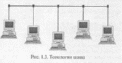
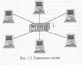
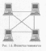
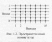
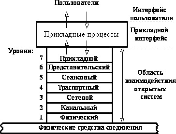
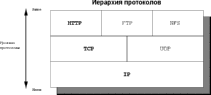
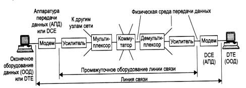
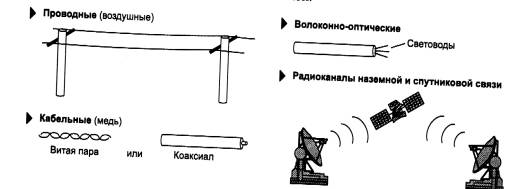
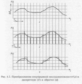
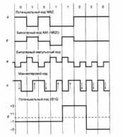

1. Классификации информационно-вычислительных сетей (ИВС). Основные понятия и определения.
Коммуникационная сеть — система, состоящая из объектов, называемых пунктами (узлами) сети и осуществляющих функции генерации, преобразования, хранения и потребления некоторого продукта, а также линий передачи (связей, коммуникаций, соединений), осуществляющих передачу продукта между пунктами. В качестве продукта могут фигурировать информация, энергия, масса. Соответственно различают группы сетей информационных, энергетических, вещественных. В группах сетей возможно разделение на подгруппы. Так, среди вещественных сетей могут быть выделены сети транспортные, водопроводные, производственные и др.
Информационно-вычислительная сеть (ИВС) — коммуникационная сеть, в которой продуктом генерирования, переработки, хранения и использования является информация, а узлами сети служит вычислительное оборудование. Компонентами ИВС могут быть ЭВМ и периферийные устройства, являющиеся источниками и приемниками данных, передаваемых по сети. Эти компоненты составляют оконечное оборудование данных. В качестве оконечного оборудования данных могут выступать ЭВМ, принтеры, плоттеры и другое вычислительное, измерительное и исполнительное оборудование автоматических и автоматизированных систем. Собственно пересылка данных происходит с помощью сред и средств, объединяемых термином среда передачи данных.
ИВС классифицируются по ряду признаков. В зависимости от расстояний между связываемыми узлами различают вычислительные сети:
территориальные — охватывающие значительное географическое пространство. Среди территориальных сетей можно выделить сети региональные и глобальные, имеющие соответственно региональные или глобальные масштабы; региональные сети иногда называют сетями MAN (Metropolitan Area Network), а общее англоязычное название для территориальных сетей — WAN (Wide Area Network);
локальные (ЛВС) — охватывающие ограниченную территорию (обычно в пределах удаленности станций не более чем на несколько десятков или сотен метров друг от друга, реже — на 1...2 км). Локальные сети обозначают LAN (Local Area Network);
корпоративные (масштаба предприятия) — представляют собой совокупность связанных между собой ЛВС, охватывающих территорию, на которой размещено одно предприятие или учреждение в одном или нескольких близко расположенных зданиях.
Среди глобальных сетей следует выделить единственную в своем роде глобальную сеть Интернет и реализованную в ней информационную службу WWW (World Wide Web, переводится на русский язык как Всемирная паутина).
В зависимости от сложности различают интегрированные сети, не интегрированные сети и подсети. Интегрированная вычислительная сеть (интерсеть) представляет собой взаимосвязанную совокупность многих вычислительных сетей, которые в интерсети называются подсетями. Обычно интерсети приспособлены для различных видов связи: телефонии, электронной почты, передачи видеоинформации, цифровых данных и т.п. В этом случае они называются сетями интегрального обслуживания.
В зависимости от топологии соединений узлов различают сети шинной (магистральной), кольцевой, звездной, ячеистой, комбинированной и произвольной структуры.
В зависимости от способа управления различают сети: клиент-сервер, или сети с выделенным сервером. В них выделяется один или несколько узлов (серверов), выполняющих в сети управляющие или специальные обслуживающие функции, а остальные узлы (клиенты) являются терминальными, в них работают пользователи. Сети клиент-сервер различаются по характеру распределения функций между серверами, т.е. по типам серверов (например, файл-серверы, серверы баз данных). При специализации серверов по определенным приложениям получается сеть распределенных вычислений;
Одноранговые — в них все узлы равноправны. Поскольку в общем случае под клиентом понимается объект (устройство или программа), запрашивающий некоторые услуги, а под сервером— объект, предоставляющий эти услуги, каждый узел в одно ранговых сетях может выполнять функции и клиента, и сервера.
В зависимости от того, одинаковые или неодинаковые ЭВМ применяют в сети, различают сети однотипных ЭВМ — однородные и разнотипных ЭВМ — неоднородные(гетерогенные).
В зависимости от прав собственности на сети последние могут быть сетями общего пользования (public) или частными (private). Среди сетей общего пользования выделяют телефонные сети и сети передачи данных.
Сети также различают в зависимости от используемых в них протоколов и по способам коммутации.
Протоколы — это набор семантических и синтаксических правил, определяющий поведение функциональных блоков сети при передаче данных. Другими словами, протокол — это совокупность соглашений относительно способа представления данных, обеспечивающего их передачу в нужных направлениях и правильную интерпретацию всеми участниками процесса информационного обмена.
Поскольку информационный обмен — процесс многофункциональный, то протоколы делятся на уровни. К каждому уровню относится группа родственных функций. Для правильного взаимодействия узлов различных вычислительных сетей их архитектура должна быть открытой. Этим целям служат унификация и стандартизация в области телекоммуникаций и вычислительных сетей.
Унификация и стандартизация протоколов выполняются рядом международных организаций, что наряду с разнообразием типов сетей породило большое число различных протоколов. Наиболее широко распространенными являются протоколы, разработанные и применяемые в глобальной сети Интернет, протоколы открытых систем Международной организации по стандартизации (ISO — International Standard Organization), протоколы Международного телекоммуникационного союза (ITU — International Telecommunication Union, ранее называвшегося CCITT) и протоколы Института инженеров по электротехнике и электронике (IEEE — Institute of Electrical and Electronics Engineers).
Протоколы сети Internet объединяют под названием ТСР/IP. Протоколы ISO являются семиуровневыми и известны как npomoколы базовой эталонной модели взаимосвязи открытых систем.
2. Топологии ИВС. Виды и способы коммутации.
Топология – способ организации соединения узлов. В зависимости от топологии соединений узлов различают сети шинной (магистральной), кольцевой, звездной, ячеистая, комбинированной или произвольной (все выше упомянутые) структуры.
замкнутая кольцевая структура, топология типа кольцо ( равноправие узлов, надёжность передачи информации)
звезда, не требует каждого узла с соседями, только с центром; центр более мощный, ёмкий; простота, от каждого узла только одна связь.
Шина, в шину от каждого узла; в шину информацию и её подбирают
Комбинированная или произвольная, все вышеупомянутые.
более подробно
При организации компьютерной сети в первую очередь необходимо выбрать способ организации физических связей, т.е. топологию. Под топологией вычислительной сетипонимается конфигурация графа, вершинам которого соответствуют компьютеры сети (иногда и другое оборудование, например концентраторы), а ребрам — физические связи между ними. Компьютеры, подключенные к сети, часто называют станциями, или узлами сети.
Конфигурация физических связей определяется электрическими соединениями компьютеров между собой и может отличаться от конфигурации логических связей между узлами сети. Логические связи представляют собой маршруты передачи данных между узлами сети и образуются путем соответствующей настройки коммуникационного оборудования.
Выбор топологии электрических связей существенно влияет на многие характеристики сети. Например, наличие резервных связей повышает надежность сети и делает возможным балансирование загрузки отдельных каналов. Простота присоединения новых узлов, свойственная некоторым топологиям, делает сеть легко расширяемой. Экономические соображения часто приводят к выбору топологий, для которых характерна минимальная суммарная длина линий связи. Рассмотрим некоторые, наиболее часто встречающиеся топологии.
Существуют четыре основных типа топологии: шина (bus), кольцо (ring), звезда (star) и ячеистая топология (mesh). Другие топологии обычно являются комбинацией двух и более главных типов. Выбор типа физической топологии для сети является одним из первых шагов планирования сети. Он основывается на множестве факторов, в число которых входят цена, расстояния, вопросы безопасности, предполагаемая сетевая операционная система, а также возможность использования для новой сети существующего оборудования, проводки и т.п.
Физическая топология шина, именуемая также линейной шиной (linear bus), состоит из единственного кабеля, к которому присоединены все компьютеры сегмента (рис. 1.3). Сообщения посылаются по линии всем подключенным станциям вне зависимости от того, кто является получателем. Каждый компьютер проверяет каждый пакет в проводе, чтобы определить получателя пакета. Если пакет предназначен для другой станции, компьютер

отвергает его. Соответственно, компьютер получает и обрабатывает любой пакет на шине, адресованный ему.
Главный кабель шины, называемый магистралью (backbone), имеет на обоих концах заглушки (terminator) для предотвращения отражения сигнала. Без правильно установленных заглушек работа шины будет ненадежной или вообще невозможной.
Шинная топология представляет собой быстрейший и простейший способ установки сети. Она требует меньше оборудования и кабелей, чем другие топологии, и ее легче настраивать. Это хороший способ быстрого построения временной сети и, как правило, лучший выбор для малых сетей (не более 10 компьютеров).
Имеется несколько недостатков, о которых надо знать при решении вопроса об использовании шинной топологии для сети. Неполадки станции или другого компонента сети трудно изолировать. Кроме того, неполадки в магистральном кабеле могут привести к выходу из строя всей сети.
Топология кольцо обычно используется в сетях Token Ring и FDDI (волоконно-оптических). В физической топологии кольцо линия передачи данных фактически образует логическое кольцо, к которому подключены все компьютеры сети (рис. 1.4). В отличие от шинной топологии, которая использует конкурентную схему, чтобы позволить станциям получать доступ к сетевому носителю, доступ к носителю в кольце осуществляется посредством логических знаков — маркеров (token), которые пускаются по кругу от станции к станции, давая им возможность переслать пакет, если это нужно. Это дает каждому компьютеру в сети равную возможность получить доступ к носителю и, следовательно, переслать по нему данные. Компьютер может посылать данные только тогда, когда владеет маркером.
Так как каждый компьютер при этой топологии является частью кольца, он имеет возможность пересылать любые полученные им пакеты данных, адресованные другой станции. Получающаяся регенерация делает сигнал сильным и позволяет избежать необходимости применения повторителей. Так как кольцо формирует бесконечный цикл, заглушки не требуются. Кольцевая топология относительно легка для установки и настройки, требует минимального аппаратного обеспечения.
Топология физического кольца имеет несколько недостатков. Как и в случае линейной шины, неполадки на одной станции могут привести к отказу всей сети. Поддерживать логическое кольцо трудно, особенно в больших сетях. Кроме того, в случае необходимости

настройки и переконфигурации любой части сети приходится временно отключать всю сеть.
Кольцевая топология дает всем компьютерам равные возможности доступа к сетевому носителю.
В топологии звезда все компьютеры в сети соединены друг с другом с помощью центрального концентратора (рис. 1.5). Все данные, которые посылает станция, направляются прямо на концентратор, который затем пересылает пакет в направлении получателя. Как и при шинной топологии, компьютер в сети типа звезда может пытаться послать данные в любой момент. Однако на деле только один компьютер может в конкретный момент времени производить посылку. Если две станции посылают сигналы на концентратор точно в одно и то же время, обе посылки окажутся неудачными и каждому компьютеру придется подождать случайный период времени, прежде чем снова пытаться получить доступ к носителю. Сети с топологией звезда обычно лучше масштабируются, чем с топологией другого типа.
Главное преимущество внедрения топологии звезда заключается в том, что в отличие от линейной шины неполадки на одной станции не выведут из строя всю сеть. В сетях с этой топологией проще находить обрывы кабеля и прочие неисправности. Кроме того, наличие центрального концентратора облегчает добавление нового компьютера и реконфигурацию сети.
Топологии звезда присущи несколько недостатков. Во-первых, при этом типе конфигурации больше расход кабеля, чем в большинстве других сетей, вследствие наличия отдельных линий, соединяющих каждый компьютер с концентратором. Кроме того, центральный концентратор выполняет большинство функций сети, так что выход из строя одного этого устройства отключает всю сеть.
Я ч е и с тая топология предусматривает соединение всех компьютеров попарно (рис. 1.6). Сети ячеистой топологии используют значительно большее количество кабеля, чем сети любой другой топологии, что делает их дороже. Кроме того, такие сети значительно сложнее устанавливать. Однако ячеистая топология обладает устойчивостью к сбоям (fault tolerance), которая заключается в способности сети работать при наличии повреждений. В сети с поврежденным сегментом это означает обход сегмента.

Каждый компьютер имеет много возможностей соединения с другим компьютером по сети, так что отдельный обрыв кабеля не приводит к потере соединения между любыми двумя компьютерами.
Многие организации используют комбинации главных сетевых топологий, получая так называемые смешанные сети.
Виды и способы коммутации:
Назначение любой сети — обеспечение обмена данными (информацией) между абонентами. Этими абонентами могут быть удаленные компьютеры, локальные сети, факс-аппараты или просто собеседники, общающиеся с помощью телефонных аппаратов. Практически невозможно предоставить каждой паре взаимодействующих абонентов свою собственную некоммутируемую физическую линию связи, которой они могли бы монопольно «владеть» в течение длительного времени. Поэтому в любой сети всегда применяется какой-либо способ коммутации, который обеспечивает доступность имеющихся физических каналов одновременно для нескольких сеансов связи между абонентами сети.
Под коммутацией данных понимается их передача, при которой канал передачи данных может использоваться попеременно для обмена информацией между различными пунктами информационной сети в отличие от связи через некоммутируемые каналы, обычно закрепленные за определенными абонентами.
Различают следующие способы коммутации данных:
коммутация каналов — осуществляется соединение двух или более станций данных и обеспечивается монопольное использование канала передачи данных до тех пор, пока соединение не будет разомкнуто;
коммутация сообщений — характеризуется тем, что создание физического канала между оконечными узлами необязательно и пересылка сообщений происходит без нарушения их целостности; вместо физического канала имеется виртуальный канал, состоящий из физических участков, и между участками возможна буферизация сообщения;
коммутация пакетов — сообщение передается по виртуальному каналу, но оно разделяется на пакеты, при этом канал передачи данных занят только во время передачи пакета (без нарушения его целостности) и после ее завершения освобождается для передачи других пакетов.
Коммутация каналов может быть пространственной и временной.
Пространственный коммутатор размера N × M представляет собой сетку (матрицу), в которой N входов подключены к горизонтальным шинам, а М выходов — к вертикальным (рис. 1.2).

В узлах сетки имеются коммутирующие элементы, причем в каждом столбце сетки может быть открыто не более чем по одному элементу. Если N< М, то коммутатор может обеспечить соединение каждого входа как минимум с одним выходом; в противном случае коммутатор называется блокирующим, т.е. не обеспечивающим соединения любого входа с одним из выходов. Обычно применяются коммутаторы с равным числом входов и выходов
N × N.
Недостаток рассмотренной схемы — большое число коммутирующих элементов в квадратной матрице, равное N2 . Для устранения этого недостатка применяют многоступенчатые коммутаторы.
Временной коммутатор строится на основе буферной памяти, запись производится в ее ячейки последовательным опросом входов, а коммутация осуществляется благодаря записи данных на выходы из нужных ячеек памяти. При этом происходит задержка на время одного цикла «запись — чтение». В настоящее время преимущественно используются временная или смешанная коммутация.
При коммутации сообщений осуществляется передача единого блока данных между транзитными компьютерами сети с временной буферизацией этого блока на диске каждого компьютера. Сообщение в отличие от пакета имеет произвольную длину, которая определяется не технологическими соображениями, а содержанием информации, составляющей сообщение. Например, сообщением может быть текстовый документ, файл с кодом программы, электронное письмо.
Транзитные компьютеры могут соединяться между собой как сетью с коммутацией пакетов, так и сетью с коммутацией каналов. Сообщение хранится в транзитном компьютере на диске, причем время хранения может быть достаточно большим, если компьютер загружен другими работами или сеть временно перегружена. По такой схеме обычно передаются сообщения, не требующие немедленного ответа, чаще всего сообщения электронной почты.
Количество транзитных компьютеров стараются по возможности уменьшать. Если компьютеры подключены к сети с коммутацией пакетов, то число промежуточных компьютеров обычно уменьшается до двух. Например, пользователь передает почтовое сообщение своему серверу исходящей почты, а тот сразу старается передать сообщение серверу входящей почты адресата. Но если компьютеры связаны между собой телефонной сетью, то часто используются несколько промежуточных серверов, так как прямой доступ к конечному серверу может быть невозможен в данный момент из-за перегрузки телефонной сети (абонент занят) или экономически невыгоден из-за высоких тарифов на дальнюю телефонную связь.
Техника коммутации сообщений появилась в компьютерных сетях раньше техники коммутации пакетов, но потом была вытеснена последней, как более эффективной по критерию пропускной способности сети. Запись сообщения на диск занимает достаточно много времени, кроме того, использование дисков предполагает наличие специализированных компьютеров в качестве коммутаторов, что удорожает сеть.
Во многих случаях коммутация пакетов оказывается наиболее эффективной. Во-первых, ускоряется передача данных в сетях сложной конфигурации за счет того, что возможна параллельная передача пакетов одного сообщения на разных участках сети; во-вторых, при появлении ошибки требуется повторная передача короткого пакета, а не всего длинного сообщения. Кроме того, ограничение сверху на размер пакета позволяет обойтись меньшим объемом буферной памяти в промежуточных узлах на маршрутах передачи данных в сети.
Любой пакет состоит из трех обязательных компонентов: заголовка, данных, информации для проверки ошибок передачи.
Заголовок содержит:
адрес источника, идентифицирующий компьютер-отправитель;
адрес места назначения, идентифицирующий компьютер-получатель;
инструкции сетевым компонентам о дальнейшем маршруте данных;
информацию компьютеру-получателю о том, как объединить передаваемый пакет с остальными, чтобы получить данные в исходном виде.
В зависимости от типа сети размер поля данных составляет от 512 байтов до 4 Кбайт. Так как обычно размер исходных данных гораздо больше 4 Кбайт, для помещения в пакет их необходимо . разбивать на мелкие блоки. При передаче объемного файла может потребоваться много пакетов.
Информация для проверки ошибок обеспечивает корректность передачи. Эта информация называется циклическим избыточным кодом, который представляет собой число, получаемое в результате математических преобразований над пакетом с исходной информацией. Когда пакет достигает места назначения, эти преобразования повторяются. Если результат совпадает с циклическим избыточный кодом, значит, пакет принят без ошибок. В противном случае необходимо повторить передачу пакета, поскольку при передаче данные изменились.
В сетях коммутации пакетов различают два режима работы— виртуальных каналов (другое название — связь с установлением соединения) и дейтаграммный (связь без установления соединения).
В режиме виртуальных каналов пакеты одного сообщения передаются в естественном порядке по устанавливаемому маршруту. При этом в отличие от коммутации каналов линии связи могут разделяться многими сообщениями, когда попеременно по каналу передаются пакеты разных сообщений (это так называемый режим временного мультиплексирования, или TDM — Типе Division Method). Эти пакеты могут задерживаться в промежуточных буферах. Предусматривается контроль правильности передачи данных путем посылки от получателя к отправителю подтверждающего сообщения. Этот контроль возможен как во всех промежуточных узлах маршрута, так и только в конечном узле. Он может осуществляться стартстопным способом, при котором отправитель не передает следующий пакет до тех пор, пока не получит подтверждения о правильной передаче предыдущего пакета, или способом передачи в окне. Окно может включать N пакетов, при этом возможны задержки в получении подтверждений на протяжении окна. Так, если произошла ошибка при передаче, т.е. отправитель получает сигнал об ошибке в передаче пакета с номером Х то нужна повторная передача, которая начинается с пакета Х
В дейтаграммном режиме сообщение делится на дейтаграммы. Дейтаграмма — это часть информации, передаваемая независимо от других частей одного и того же сообщения в вычислительных сетях с коммутацией пакетов. Дейтаграммы одного и того же сообщения могут передаваться в сети по разным маршрутам и поступать к адресату в произвольной последовательности, что может послужить причиной блокировок сети. На внутренних участках маршрута контроль правильности передачи не предусмотрен, и надежность связи обеспечивается лишь контролем на оконечном узле.
Блокировкой сети в дейтаграммном режиме называется такая ситуация, когда в буферную память узла вычислительной сети поступило столько пакетов разных сообщений, что эта память оказалась полностью занятой. Следовательно, она не может принимать другие пакеты и освободиться от уже принятых, так как это возможно только после поступления всех дейтаграмм сообщения.
3.Протоколы. Определение. 7-уровневая модели OSI и иерархия протоколов.
Протоколы — это набор семантических и синтаксических правил, определяющий поведение функциональных блоков сети при передаче данных. Другими словами, протокол — это совокупность соглашений относительно способа представления данных, обеспечивающего их передачу в нужных направлениях и правильную интерпретацию всеми участниками процесса информационного обмена.
Поскольку информационный обмен — процесс многофункциональный, то протоколы делятся на уровни. К каждому уровню относится группа родственных функций. Для правильного взаимодействия узлов различных вычислительных сетей их архитектура должна быть открытой. Этим целям служат унификация и стандартизация в области телекоммуникаций и вычислительных сетей.
Унификация и стандартизация протоколов выполняются рядом международных организаций, что наряду с разнообразием типов сетей породило большое число различных протоколов. Наиболее широко распространенными являются протоколы, разработанные и применяемые в глобальной сети Интернет, протоколы открытых систем Международной организации по стандартизации (ISO — International Standard Organization), протоколы Международного телекоммуникационного союза (ITU — International Telecommunication Union, ранее называвшегося CCITT) и протоколы Института инженеров по электротехнике и электронике (IEEE — Institute of Electrical and Electronics Engineers).
Протоколы сети Internet объединяют под названием ТСР/IP. Протоколы ISO являются семиуровневыми и известны как npomoколы базовой эталонной модели взаимосвязи открытых систем.
7-уровневая модель OSI
Для единого представления данных в сетях с неоднородными устройствами и программным обеспечением международная организация по стандартам ISO (International Standardization Organization) разработала базовую модель связи открытых систем OSI (Open System Interconnection). Эта модель описывает правила и процедуры передачи данных в различных сетевых средах при организации сеанса связи. Основными элементами модели являются уровни, прикладные процессы и физические средства соединения.
Каждый уровень модели OSI выполняет определенную задачу в процессе передачи данных по сети. Базовая модель является основой для разработки сетевых протоколов. OSI разделяет коммуникационные функции в сети на семь уровней, каждый из которых обслуживает различные части процесса области взаимодействия открытых систем.
Модель OSI
описывает только системные средства
взаимодействия, не касаясь приложений
конечных пользователей. Приложения
реализуют свои собственные протоколы
взаимодействия, обращаясь к системным
средствам. 
Рис. 1. Модель OSI
Прикладной уровень — верхний уровень модели, обеспечивающий взаимодействие пользовательских приложений с сетью:
позволяет приложениям использовать сетевые службы:
-удалённый доступ к файлам и базам данных,
-пересылка электронной почты;
-отвечает за передачу служебной информации;
-предоставляет приложениям информацию об ошибках;
-формирует запросы к уровню представления.
Представительский уровень обеспечивает преобразование протоколов и шифрование/дешифрование данных. Запросы приложений, полученные с прикладного уровня, на уровне представления преобразуются в формат для передачи по сети, а полученные из сети данные преобразуются в формат приложений. На этом уровне может осуществляться сжатие/распаковка или кодирование/декодирование данных, а также перенаправление запросов другому сетевому ресурсу, если они не могут быть обработаны локально.
Уровень представлений обычно представляет собой промежуточный протокол для преобразования информации из соседних уровней. Это позволяет осуществлять обмен между приложениями на разнородных компьютерных системах прозрачным для приложений образом. Уровень представлений обеспечивает форматирование и преобразование кода. Форматирование кода используется для того, чтобы гарантировать приложению поступление информации для обработки, которая имела бы для него смысл. При необходимости этот уровень может выполнять перевод из одного формата данных в другой.
Уровень представлений имеет дело не только с форматами и представлением данных, он также занимается структурами данных, которые используются программами. Таким образом, уровень 6 обеспечивает организацию данных при их пересылке.
Сеансовый модели обеспечивает поддержание сеанса связи, позволяя приложениям взаимодействовать между собой длительное время. Уровень управляет созданием/завершением сеанса, обменом информацией, синхронизацией задач, определением права на передачу данных и поддержанием сеанса в периоды неактивности приложений
Транспортный уровень модели предназначен для обеспечения надёжной передачи данных от отправителя к получателю. При этом уровень надёжности может варьироваться в широких пределах.
Третий, сетевой уровень, предназначен для маршрутизации информации и управления сетью передачи данных. В отличие от предыдущих, этот уровень в большей степени ориентирован на сеть передачи данных. Здесь решаются вопросы управления сетью передачи данных, в том числе маршрутизация и управление информационными потоками.
Канальный уровень обеспечивает функциональные и процедурные средства для установления, поддержания и расторжения соединений на уровне каналов передачи данных. Процедуры канального уровня обеспечивают обнаружение и, возможно, исправление ошибок, возникающих на физическом уровне.
Физический уровень обеспечивает механические, электрические, функциональные и процедурные средства организации физических соединений при передаче бит данных между физическими объектами.
Нижние уровни образуют транспортную службу компьютерной сети, которая обеспечивает передачу («транспортировку») информации между рабочими станциями, освобождая более высокие уровни от решения этих задач.

IP – протокол межсетевого уровня;
Протокол IP (Internet Protocol) является самым распространенным межсетевым протоколом в мире. Функциональность протокола определяется объемом данных, хранящихся в заголовках. Структура заголовков IP, а, следовательно, и его возможности первоначально определялись в серии RFC и других общедоступных документов, которые были опубликованы еще во времена создания группы IETF. Обычно считается, что базовым документом для современной версии IP является RSC 791 («internet protocol», Postel, J.B; 1981).
Задачи протокола IP
Заголовок пакета IP содержит всю информацию, необходимую для выполнения основных сетевых операций. К числу таких операций относятся:
-адресация и маршрутизация;
-фрагментация и повторная сборка;
-выявление и исправление данных, поврежденных в процессе пересылки;
TCP – протокол межхостового уровня, обеспечивающий надежную доставку;
Протокол TCP (Transmission Control Protocol) пользуется сервисом IP для обеспечения надежной доставки прикладных данных. ТСР создает между двумя или более хостами сеанс, ориентированный на соединение. Он обладает такими возможностями, как поддержка нескольких потоков данных, координация потока и контроль ошибок и даже восстановление нарушенного порядка пакетов. Протокол ТСР также разрабатывался посредством публикации общедоступных документов RFC группой IETF.
Задачи протокола ТСР
В сеансе связи ТСР обеспечивает ряд важных функций, большая часть которых связана с обеспечением интерфейса между различными приложениями и сетью. К числу этих функций относятся:
-мультиплексирование данных между приложениями и сетью;
-проверка целостности полученных данных;
-восстановление нарушенного порядка данных;
-подтверждение успешного получения данных;
-регулирование скорости передачи данных;
-измерение временных характеристик;
-координация повторной передачи данных, поврежденных или потерянных в процессе пересылки.
UDP – протокол межхостового уровня, не обеспечивающий надежной доставки;
Протокол UDP (User Datagram Protocol) является вторым протоколом межхостового уровня (соответствующего транспортному уровню в эталонной модели OSI). UDP обеспечивает простейшие, требующие минимальных затрат средства передачи данных в виде так называемых «дейтаграмм» (datagrams).
Как правило, UDP используется в приложениях, ориентированных на широковещательную рассылку или работу с сообщениями, а также там, где не требуется полная надежность, обеспечиваемая протоколом TCP.
Задачи протокола UDP
Протокол UDP намеренно проектировался как эффективный транспортный протокол с минимальными издержками, что напрямую отражено в структуре его заголовка. Информации, хранящейся в заголовке, хватает только для того, чтобы переслать дейтаграмму нужному приложению (то есть номеру порта) и выполнить простейшую проверку ошибок.
UDP не обладает ни одной из нетривиальных возможностей, обеспечиваемых протоколом ТСР. В нем не предусмотрены таймеры, средства управления потоком или регулировки скорости передачи, подтверждения, механизмы ускоренной доставки срочных данных и т.д. Протокол UDP просто пытается доставить дейтаграмму. Если попытка по какой-либо причине завершается неудачей, дейтаграмма теряется без каких-либо попыток повторной передачи данных.
FTP
В отличие от протокола Telnet, позволяющего работать на удаленном хосте, протокол FTP (File Transfer Protocol) играет более пассивную роль и предназначается для приема и отправки файлов на удаленный сервер. Такая возможность идеально подходит для web-мастеров и вообще для всех, кому потребуется переслать большие файлы с одного компьютера на другой без прямого подключения. FTP обычно используется в так называемом «пассивном» режиме, при котором клиент загружает данные о дереве каталогов и отключается, но периодически сигнализирует серверу о необходимости сохранять открытый порт.
NFS
Файловая система NFS (Network File System) создавалась компанией Sun Microsystems, Inc. для решения проблем в сетях с несколькими операционными системами. NFS поддерживает только совместны доступ к файлам и является компонентом многих операционных систем семейства Unix. Кроме того, NFS хорошо поддерживается большинством других операционных систем.
HTTP
Протокол HTTP заложен в основу работы World Wide Web.
4.Взаимоувязанная сеть связи РФ. Классификация по категориям.
ВСС РФ – представляет собой комплекс технологически сопряженных сетей связи общего пользования и ведомственных сетей электросвязи на территории РФ, обеспеченный общим централизованным управлением, независимо от их ведомственной принадлежности и форм собственности.
ВСС представляет собой сложную, иерархическую систему. Упрощенно ее можно представить тремя уровнями.
I уровень. Первичная сеть – представляет собой совокупность всех некоммутируемых каналов связи без подразделения по назначению и видам.
II уровень. Вторичные сети – состоят из каналов определенного назначения (телефонных, телеграфных, передачи данных, телевизионных и т.д.)
III уровень. Системы и службы электросвязи, предоставляющие пользователям конкретные услуги (Телефонную связь, Услуги по передаче данных, распределение программ звукового и телевизионного вещания, и т.д.)
С лекции:
1) транспортные сети(транспортировка)
2) фиксированная
3) сеть общего пользования (обслуживание любых потребителей, которые хотят к ней подключиться)
-выделенные сети
- технологическая сеть (специфичный технологический процесс) связь оборудования на заводе
-сети специального назначения
Основой электросвязи Российской Федерации является
Взаимоувязанная сеть связи (ВСС), обеспечивающая предоставление
пользователям услуг электросвязи на всей территории страны.
Взаимоувязанная сеть связи - это комплекс технологически
сопряжённых сетей электросвязи общего пользования и ведомственных сетей
с общим централизованным управлением, независимо от ведомственной
принадлежности и форм собственности.
В структуры ВСС РФ традиционно входят следующие системы общего
пользования:
- телефонная связь;
- телеграфная связь;
- факсимильная связь;
- передача газетных полос;
- передача данных;
- распространение программ звукового вещания;
- распространение программ телевизионного вещания.
ВСС
1) телефонная связь(+мобильная)
-междугородняя/международная (дорого)
- зоновая связь (регион)
- населённый пункт (телефон:связь общего пользования)
2)ТВ/радио
3)документальная электросвязь
- телеграфные службы
- службы передачи данных
- телематические службы(web, справочные, эл почта)
Номер 11 цифр
код страны(+7) 8 в начале идём из населённого пункта
3 цифры – код зоны Алт края(385)
1 цифра номер узла
Остальное конкретный номер
8-10 звоним за пределы страны (межгосударственная)
+7=8 в начале
Мобильная 7(начало нумерной пренадлежности 913 мтс, 903 билайн)
ДЭС (документальная электро связь) – вид электро связи, предназначенное для доставки сообщений в виде документа
5.Взаимоувязанная сеть связи РФ. Системы документальной электросвязи.
ВСС РФ – представляет собой комплекс технологически сопряженных сетей связи общего пользования и ведомственных сетей электросвязи на территории РФ, обеспеченный общим централизованным управлением, независимо от их ведомственной принадлежности и форм собственности.
ВСС представляет собой сложную, иерархическую систему. Упрощенно ее можно представить тремя уровнями.
I уровень. Первичная сеть – представляет собой совокупность всех некоммутируемых каналов связи без подразделения по назначению и видам.
II уровень. Вторичные сети – состоят из каналов определенного назначения (телефонных, телеграфных, передачи данных, телевизионных и т.д.)
III уровень. Системы и службы электросвязи, предоставляющие пользователям конкретные услуги (Телефонную связь, Услуги по передаче данных, распределение программ звукового и телевизионного вещания, и т.д.)
Основой электросвязи Российской Федерации является
Взаимоувязанная сеть связи (ВСС), обеспечивающая предоставление
пользователям услуг электросвязи на всей территории страны.
Взаимоувязанная сеть связи - это комплекс технологически
сопряжённых сетей электросвязи общего пользования и ведомственных сетей
с общим централизованным управлением, независимо от ведомственной
принадлежности и форм собственности.
В структуры ВСС РФ традиционно входят следующие системы общего
пользования:
- телефонная связь;
- телеграфная связь;
- факсимильная связь;
- передача газетных полос;
- передача данных;
- распространение программ звукового вещания;
- распространение программ телевизионного вещания.
ВСС
1) телефонная связь(+мобильная)
-междугородняя/международная (дорого)
- зоновая связь (регион)
- населённый пункт (телефон:связь общего пользования)
2)ТВ/радио
3)документальная электросвязь
- телеграфные службы
- службы передачи данных
- телематические службы(web, справочные, эл почта)
Номер 11 цифр
код страны(+7) 8 в начале идём из населённого пункта
3 цифры – код зоны Алт края(385)
1 цифра номер узла
Остальное конкретный номер
8-10 звоним за пределы страны (межгосударственная)
+7=8 в начале
Мобильная 7(начало нумерной пренадлежности 913 мтс, 903 билайн)
ДЭС (документальная электро связь) – вид электро связи, предназначенное для доставки сообщений в виде документа
Важно!
В настоящее время важное место в ВСС занимают системы
документальной электросвязи (СДЭС), которые включают в себя системы
телеграфной связи, службы передачи данных и телематические службы.
Системы документальной электросвязи способны передавать
сообщения без искажений, что используется для передачи текстовых
документов, и с искажениями, что, в свою очередь, используется для
передачи звуковой и графической информации.
1) телеграфная служба - служба доставки сообщений в буквенно-цифровом
виде, а также комплекс услуг, предоставляемых населению и предприятиям
при использовании системы телеграфной связи;
2) служба передачи данных - служба, выполняющая доставку разнородных
массивов данных (сообщений) для ЭВМ; 3) телематические службы (ТМ) - службы электросвязи, за исключением
телефонной, телеграфной служб и службы передачи данных,
предназначенные для передачи информации через сети электросвязи.
Примерами ТМ служб являются: факсимильные службы, службы
электронных сообщений, службы голосовых сообщений, службы
аудио/видеоконференций, а также службы доступа к информации,
хранящейся в электронном виде.
6.Линии связи. Типы и виды. Особенности.
Линия связи
(ЛС) – совокупность технических
средств и физическая среда, которые
обеспечивают передачу сигналов от
источника к получателю. В соответствии
с видом используемого для передачи
сигнала, ЛС также можно подразделить
на две основные группы:
- проводные
ЛС (направляющие, электрические);
-
беспроводные ЛС (радио ЛС).

Линия связи (рис. выше) состоит в общем случае из физической среды, по которой передаются электрические информационные сигналы, аппаратуры передачи данных и промежуточной аппаратуры. Синонимом термина линия связи (line) является термин канал связи(channel).
Физическая среда передачи данных (medium) может представлять собой кабель, то есть набор проводов, изоляционных и защитных оболочек и соединительных разъемов, а также земную атмосферу или космическое пространство, через которые распространяются электромагнитные волны.
В зависимости от среды передачи данных линии связи разделяются на следующие:

проводные (воздушные);
кабельные (медные и волоконно-оптические);
радиоканалы наземной и спутниковой связи.
Проводные (воздушные) линии связи представляют собой провода без каких-либо изолирующих или экранирующих оплеток, проложенные между столбами и висящие в воздухе. По таким линиям связи традиционно передаются телефонные или телеграфные сигналы, но при отсутствии других возможностей эти линии используются и для передачи компьютерных данных. Скоростные качества и помехозащищенность этих линий оставляют желать много лучшего. Сегодня проводные линии связи быстро вытесняются кабельными.
Кабельные линии представляют собой достаточно сложную конструкцию. Кабель состоит из проводников, заключенных в несколько слоев изоляции: электрической, электромагнитной, механической, а также, возможно, климатической. Кроме того, кабель может быть оснащен разъемами, позволяющими быстро выполнять присоединение к нему различного оборудования. В компьютерных сетях применяются три основных типа кабеля: кабели на основе скрученных пар медных проводов, коаксиальные кабели с медной жилой, а также волоконно-оптические кабели.
Скрученная пара проводов называется витой парой (twisted pair). Витая пара существует в экранированном варианте (Shielded Twistedpair, STP), когда пара медных проводов обертывается в изоляционный экран, и неэкранированном (Unshielded Twistedpair, UTP), когда изоляционная обертка отсутствует. Скручивание проводов снижает влияние внешних помех на полезные сигналы, передаваемые по кабелю.
Коаксиальный
кабель (coaxial) имеет несимметричную
конструкцию и состоит из внутренней
медной жилы и оплетки, отделенной от
жилы слоем изоляции. Существует несколько
типов коаксиального кабеля, отличающихся
характеристиками и областями применения
- для локальных сетей, для глобальных
сетей, для кабельного телевидения и т.
п.
Волоконно-оптический
кабель (optical fiber) состоит из тонких
(5-60 микрон) волокон, по которым
распространяются световые сигналы. Это
наиболее качественный тип кабеля - он
обеспечивает передачу данных с очень
высокой скоростью (до 10 Гбит/с и выше) и
к тому же лучше других типов передающей
среды обеспечивает защиту данных от
внешних помех.
Радиоканалы наземной и спутниковой связи образуются с помощью передатчика и приемника радиоволн. Существует большое количество различных типов радиоканалов, отличающихся как используемым частотным диапазоном, так и дальностью канала. Диапазоны коротких, средних и длинных волн (KB, СВ и ДВ), называемые также диапазонами амплитудной модуляции (Amplitude Modulation, AM) по типу используемого в них метода модуляции сигнала, обеспечивают дальнюю связь, но при невысокой скорости передачи данных. Более скоростными являются каналы, работающие на диапазонах ультракоротких волн (УКВ), для которых характерна частотная модуляция (Frequency Modulation, FM), а также диапазонах сверхвысоких частот (СВЧ или microwaves). В диапазоне СВЧ (свыше 4 ГГц) сигналы уже не отражаются ионосферой Земли и для устойчивой связи требуется наличие прямой видимости между передатчиком и приемником. Поэтому такие частоты используют либо спутниковые каналы, либо радиорелейные каналы, где это условие выполняется.
В компьютерных сетях сегодня применяются практически все описанные типы физических сред передачи данных, но наиболее перспективными являются волоконно-оптические. На них сегодня строятся как магистрали крупных территориальных сетей, так и высокоскоростные линии связи локальных сетей. Популярной средой является также витая пара, которая характеризуется отличным соотношением качества к стоимости, а также простотой монтажа. С помощью витой пары обычно подключают конечных абонентов сетей на расстояниях до 100 метров от концентратора. Спутниковые каналы и радиосвязь используются чаще всего в тех случаях, когда кабельные связи применить нельзя - например, при прохождении канала через малонаселенную местность или же для связи с мобильным пользователем сети, таким как шофер грузовика, врач, совершающий обход, и т. п.
(Спутниковые переотражаются со спутника назад на Землю.)
7. Характеристики линий связи. Связь между характеристиками линии и спектром передаваемого сигнала.
Линия связи (ЛС) – совокупность технических средств и физическая среда, которые обеспечивают передачу сигналов от источника к получателю. В зависимости от среды передачи данных линии связи разделяются на следующие
проводные (воздушные);
кабельные (медные и волоконно-оптические);
радиоканалы наземной и спутниковой связи.
К основным характеристикам линий связи относятся:
-амплитудно-частотная характеристика;
-полоса пропускания;
-затухание;
-помехоустойчивость;
-перекрестные наводки на ближнем конце линии;
-пропускная способность;
-достоверность передачи данных;
-удельная стоимость.
Амплитудно-частотная характеристика (рис. 2.7) показывает, как затухает амплитуда синусоиды на выходе линии связи по сравнению с амплитудой на ее входе для всех возможных частот передаваемого сигнала. Вместо амплитуды в этой характеристике часто используют также такой параметр сигнала, как его мощность.
Полоса пропускания (bandwidth) - это непрерывный диапазон частот, для которого отношение амплитуды выходного сигнала ко входному превышает некоторый заранее заданный предел, обычно 0,5. То есть полоса пропускания определяет диапазон частот синусоидального сигнала, при которых этот сигнал передается по линии связи без значительных искажений. Знание полосы пропускания позволяет получить с некоторой степенью приближения тот же результат, что и знание амплитудно-частотной характеристики. Как мы увидим ниже, ширина полосы пропускания в наибольшей степени влияет на максимально возможную скорость передачи информации по линии связи. Именно этот факт нашел отражение в английском эквиваленте рассматриваемого термина (width - ширина).
Затухание (attenuation) определяется как относительное уменьшение амплитуды или мощности сигнала при передаче по линии сигнала определенной частоты. Таким образом, затухание представляет собой одну точку из амплитудно-частотной характеристики линии. Часто при эксплуатации линии заранее известна основная частота передаваемого сигнала, то есть та частота, гармоника которой имеет наибольшую амплитуду и мощность. Поэтому достаточно знать затухание на этой частоте, чтобы приблизительно оценить искажения передаваемых по линии сигналов. Более точные оценки возможны при знании затухания на нескольких частотах, соответствующих нескольким основным гармоникам передаваемого сигнала.
Пропускная способность (throughput) линии характеризует максимально возможную скорость передачи данных по линии связи. Пропускная способность измеряется в битах в секунду - бит/с, а также в производных единицах, таких как килобит в секунду (Кбит/с), мегабит в секунду (Мбит/с), гигабит в секунду (Гбит/с) и т. д.
Помехоустойчивость линии определяет ее способность уменьшать уровень помех, создаваемых во внешней среде, на внутренних проводниках. Помехоустойчивость линии зависит от типа используемой физической среды, а также от экранирующих и подавляющих помехи средств самой линии. Наименее помехоустойчивыми являются радиолинии, хорошей устойчивостью обладают кабельные линии и отличной - волоконно-оптические линии, малочувствительные ко внешнему электромагнитному излучению. Обычно для уменьшения помех, появляющихся из-за внешних электромагнитных полей, проводники экранируют и/или скручивают.
Перекрестные наводки на ближнем конце (Near End Cross Talk - NEXT) определяют помехоустойчивость кабеля к внутренним источникам помех, когда электромагнитное поле сигнала, передаваемого выходом передатчика по одной паре проводников, наводит на другую пару проводников сигнал помехи. Если ко второй паре будет подключен приемник, то он может принять наведенную внутреннюю помеху за полезный сигнал
Достоверность передачи данных характеризует вероятность искажения для каждого передаваемого бита данных. Иногда этот же показатель называют интенсивностью битовых ошибок (Bit Error Rate, BER). Величина BER для каналов связи без дополнительных средств защиты от ошибок (например, самокорректирующихся кодов или протоколов с повторной передачей искаженных кадров) составляет, как правило,10-4 - 10-6, в оптоволоконных линиях связи - 10-9. Значение достоверности передачи данных, например, в 10-4 говорит о том, что в среднем из 10000 бит искажается значение одного бита.
Линия связи искажает передаваемые сигналы из-за того, что её физ параметры отличаются от идеальных => меняется спектр передаваемого сигнала.
8.Передача данных на физическом уровне. Дискретная модуляция аналоговых сигналов. Кодирование и виды кодов.
Дискретная модуляция аналоговых сигналов
Сообщения об изменениях каких-либо физических непрерывных величин (например, в системах дистанционного управления, телеметрии), направляемые для обработки на цифровую ЭВМ, предварительно преобразовываются в дискретную форму. Такое преобразование сообщения из аналоговой формы (рис. 4.2, а) в дискретную (рис. 4.2, б) называется квантованием, или дискретизацией, теорию которой разработал академик В.А. Котельников.

Для дискретных сообщений характерно наличие фиксированного набора элементов, называемых дискретами по уровню ∆А, из которых в некоторые моменты — дискеты по времени ∆Тд — формируются последовательности чисел, соответствующих уровням непрерывной величины. Такое преобразование сообщения из дискретной формы в цифровую называется оцифровкой.
После проведенной дискретизации непрерывной функции в моменты времени, соответствующие очередному дискрету времени Тд амплитуде сигнала приписывается значение, равное числу дискретов (квантов) по уровню ∆А, содержащемуся в абсолютном значении амплитуды А. Число дискретов подсчитывается двоичным счетчиком, и в результате получается двоичный цифровой код значения амплитуды сигнала в момент времени очередного дискрета. Образующаяся последовательность цифровых кодов посылается в канал связи. Такая оцифровка производится в течение времени преобразования ∆Тд с помощью аналого-цифровых преобразователей (АЦП).
В системах дистанционного управления и в АСУ полученный по линии связи цифровой код должен быть преобразован в аналоговую форму, для чего он подается на ЦАП.
Простейшая схема ЦАП (рис. 4.4) представляет собой матрицу весовых сопротивлений Ri, подключаемых с помощью управляемых разрядами кода ключей Zi к источнику опорного питания Uоп в той или иной комбинации, соответствующей значению кода. Полученное напряжение через операционный усилитель подается на выход. Восстановленная таким образом непрерывная последовательность будет иметь форму, отличающуюся от исходной в допустимых пределах
рис. 4.2, в). Подобный ЦАП, как уже говорилось, входит и в состав АЦП (см. рис. 4.3, а), в котором он вырабатывает ступенчатое напряжение UЦАП (см. рис. 4.3, б), представляющее собой нарастающую сумму дискретов (квантов) по уровню ∆А.
Теперь рассмотрим вопрос о том, какова должна быть частота рис. 4.4. Схема четырехразрядного повторения выборок, т.е. часто ЦАП та дискретизации, чтобы обеспечить заданную точность оцифровки. Ответ дает теорема Котельникова: для того чтобы точно воспроизвести непрерывную временную последовательность по ее выборкам (по дискретной временной последовательности), частота дискретизации 1/Тд должна более чем вдвое превышать наивысшую частоту fmax в этой непрерывной последовательности, т.е.Тд≤ 1/2fmax.
Наивысшая частота — это частота nf гармонической составляющей ряда Фурье с максимальным номером nmax, в который может быть разложена импульсная последовательность, полученная преобразованием исходной непрерывной последовательности после дискретизации (см. рис. 4.2, 6).
На практике учитываются гармонические составляющие с первой по пятую. При выполнении условия этой теоремы погрешность преобразования на этапе квантования по времени отсутствует. Процесс квантования по уровню всегда связан с внесением некоторой погрешности εi, значение которой определяется неравенством — ∆А/2 ≤εi ≤ ∆А/2. Погрешность εi, называемая шумом квантования, однозначно определяется числом допустимых значений преобразуемой непрерывной функции А, т.е. разрядностью используемого цифрового кода. Следовательно, погрешность аналого-цифрового преобразования, обусловленная шумом квантования, при увеличении разрядности выходного кода может быть уменьшена до сколь угодно малой величины. Но в отличие от погрешности дискретизации по времени она принципиально присуща данному алгоритму и не может быть сведена кнулю выбором параметров устройства.
Рассмотренные погрешности обусловлены самим алгоритмом аналого-цифрового преобразования. Кроме них в реальных АЦП возникают погрешности, связанные с не идеальностью используемой элементной базы, т.е. инструментальные погрешности.
Разработаны разнообразные схемы АЦП и ЦАП, отличающиеся по функциональному составу и характеристикам. Такое многообразие устройств является следствием различия требований,
предъявляемых к преобразователям конкретными условиями их применения, которые не могут быть удовлетворены единым универсальным техническим решением. В табл. 4.1 перечислены ряд областей применения АЦП и требования, предъявляемые к ним реальными условиями работы.
Оцифровывание голоса осуществляется аппаратурой выделенных цифровых линий технологии плезиохронной цифровой иерархии (ПЦИ, другое обозначение — PDH от Plesiochronic Digital Hierarchy; plesio — почти, т.е. почти синхронная). Аппаратура PDH оцифровывает голос с частотой 8 кГц и кодирует его с помощью импульсно-кодовой модуляции — PCM (Pulse Code Modulation), образуя цифровой поток данных 64 Кбит/с.
Кодирование
При использовании прямоугольных импульсов для передачи дискретной информации необходимо выбрать такой способ кодирования, который одновременно достигал бы нескольких целей:
-имел при одной и той же битовой скорости наименьшую ширину спектра результирующего сигнала;
-обеспечивал синхронизацию между передатчиком и приемником;
-обладал способностью распознавать ошибки;
-обладал низкой стоимостью реализации.
Более узкий спектр сигналов позволяет на одной и той же линии (с одной и той же полосой пропускания) добиваться более высокой скорости передачи данных. Кроме того, часто к спектру сигнала предъявляется требование отсутствия постоянной составляющей, то есть наличия постоянного тока между передатчиком и приемником. В частности, применение различных трансформаторных схем гальванической развязки препятствует прохождению постоянного тока.
Синхронизация передатчика и приемника нужна для того, чтобы приемник точно знал, в какой момент времени необходимо считывать новую информацию с линии связи. Эта проблема в сетях решается сложнее, чем при обмене данными между близко расположенными устройствами, например между блоками внутри компьютера или же между компьютером и принтером. На небольших расстояниях хорошо работает схема, основанная на отдельной тактирующей линии связи (рис. 2.15), так что информация снимается с линии данных только в момент прихода тактового импульса. В сетях использование этой схемы вызывает трудности из-за неоднородности характеристик проводников в кабелях. На больших расстояниях неравномерность скорости распространения сигнала может привести к тому, что тактовый импульс придет настолько позже или раньше соответствующего сигнала данных, что бит данных будет пропущен или считан повторно. Другой причиной, по которой в сетях отказываются от использования тактирующих импульсов, является экономия проводников в дорогостоящих кабелях.
Поэтому в сетях применяются так называемые самосинхронизирующиеся коды, сигналы которых несут для передатчика указания о том, в какой момент времени нужно осуществлять распознавание очередного бита
Потенциальный код без возвращения к нулю
На рис. 2.16, а показан уже упомянутый ранее метод потенциального кодирования, называемый также кодированием без возвращения к нулю (Non Return to Zero, NRZ). Последнее название отражает то обстоятельство, что при передаче последовательности единиц сигнал не возвращается к нулю в течение такта (как мы увидим ниже, в других методах кодирования возврат к нулю в этом случае происходит). Метод NRZ прост в реализации, обладает хорошей распознаваемостью ошибок (из-за двух резко отличающихся потенциалов), но не обладает свойством самосинхронизации. При передаче длинной последовательности единиц или нулей сигнал на линии не изменяется, поэтому приемник лишен возможности определять по входному сигналу моменты времени, когда нужно в очередной раз считывать данные. Даже при наличии высокоточного тактового генератора приемник может ошибиться с моментом съема данных, так как частоты двух генераторов никогда не бывают полностью идентичными. Поэтому при высоких скоростях обмена данными и длинных последовательностях единиц или нулей небольшое рассогласование тактовых частот может привести к ошибке в целый такт и, соответственно, считыванию некорректного значения бита.

Рис. 2.16. Способы дискретного кодирования данных
Другим серьезным недостатком метода NRZ является наличие низкочастотной составляющей, которая приближается к нулю при передаче длинных последовательностей единиц или нулей. Из-за этого многие каналы связи, не обеспечивающие прямого гальванического соединения между приемником и источником, этот вид кодирования не поддерживают. В результате в чистом виде код NRZ в сетях не используется. Тем не менее используются его различные модификации, в которых устраняют как плохую самосинхронизацию кода NRZ, так и наличие постоянной составляющей. Привлекательность кода NRZ, из-за которой имеет смысл заняться его улучшением, состоит в достаточно низкой частоте основной гармоники f0, которая равна N/2 Гц, как это было показано в предыдущем разделе. У других методов кодирования, например манчестерского, основная гармоника имеет более высокую частоту.
Манчестерский код
В локальных сетях до недавнего времени самым распространенным методом кодирования был так называемый манчестерский код (рис. 2.16, г). Он применяется в технологиях Ethernet и Token Ring.
В манчестерском коде для кодирования единиц и нулей используется перепад потенциала, то есть фронт импульса. При манчестерском кодировании каждый такт делится на две части. Информация кодируется перепадами потенциала, происходящими в середине каждого такта. Единица кодируется перепадом от низкого уровня сигнала к высокому, а ноль - обратным перепадом. В начале каждого такта может происходить служебный перепад сигнала, если нужно представить несколько единиц или нулей подряд. Так как сигнал изменяется по крайней мере один раз за такт передачи одного бита данных, то манчестерский код обладает хорошими самосинхронизирующими свойствами. Полоса пропускания манчестерского кода уже, чем у биполярного импульсного. У него также нет постоянной составляющей, а основная гармоника в худшем случае (при передаче последовательности единиц или нулей) имеет частоту N Гц, а в лучшем (при передаче чередующихся единиц и нулей) она равна N/2 Гц, как и у кодов AMI или NRZ. В среднем ширина полосы манчестерского кода в полтора раза уже, чем у биполярного импульсного кода, а основная гармоника колеблется вблизи значения 3N/4. Манчестерский код имеет еще одно преимущество перед биполярным импульсным кодом. В последнем для передачи данных используются три уровня сигнала, а в манчестерском - два.
Биполярный импульсный код
Кроме потенциальных кодов в сетях используются и импульсные коды, когда данные представлены полным импульсом или же его частью - фронтом. Наиболее простым случаем такого подхода является биполярный импульсный код, в котором единица представлена импульсом одной полярности, а ноль - другой (рис. 2.16, в). Каждый импульс длится половину такта. Такой код обладает отличными самосинхронизирующими свойствами, но постоянная составляющая, может присутствовать, например, при передаче длинной последовательности единиц или нулей. Кроме того, спектр у него шире, чем у потенциальных кодов. Так, при передаче всех нулей или единиц частота основной гармоники кода будет равна N Гц, что в два раза выше основной гармоники кода NRZ и в четыре раза выше основной гармоники кода AMI при передаче чередующихся единиц и нулей. Из-за слишком широкого спектра биполярный импульсный код используется редко.
-Метод биполярного кодирования с альтернативной инверсией
- Потенциальный код с инверсией при единице
9.Технология частотного/спектрального мультиплексирования при передаче данных по линиям связи.
Мультиплексоры-оптимальным образом наполнить смешать инф потоки и наполнить ими таймслоты в необходимом порядке
В информационных технологиях и связи, мультиплекси́рование (англ. multiplexing, muxing) — уплотнение канала, т. е. передача нескольких потоков (каналов) данных с меньшей скоростью (пропускной способностью) по одному каналу.
В телекоммуникациях мультиплексирование подразумевает передачу данных по нескольким логическим каналам связи в одном физическом канале. Под физическим каналом подразумевается реальный канал со своей пропускной способностью — медный или оптический кабель, радиоканал.
Мультиплексирование с разделением по частоте (FDM)
1)Мультиплексирование с разделением по частоте (англ. FDM, Frequency Division Multiplexing) предполагает размещение в пределах полосы пропускания канала нескольких каналов с меньшей шириной. Наглядным примером может послужитьрадиовещание, где в пределах одного канала (радиоэфира) размещено множество радиоканалов на разных частотах (в разных частотных полосах).
Основные применения
Используется в сетях мобильной связи (см. FDMA) для разделения доступа, в волоконно-оптической связи аналогом являетсямультиплексирование с разделением по длине волны (WDM, Wavelength Division Multiplexing) (где частота — это цвет излучения излучателя), в природе — все виды разделений по цвету (частота электромагниных колебаний) и тону (частота звуковых колебаний).
2)Спектральное уплотнение каналов (англ. Wavelength-division multiplexing, WDM, буквально мультиплексирование с разделением по длине волны) — технология, позволяющая одновременно передавать несколько информационных каналов по одному оптическому волокну на разных несущих частотах.
Технология WDM позволяет существенно увеличить пропускную способность канала (к 2003 году достигнута скорость 10,72 Тбит/с[1], а к 2012 — 20 Тбит/с[2]), причем она позволяет использовать уже проложенные волоконно-оптические линии. Благодаря WDM удается организовать двустороннюю многоканальную передачу трафика по одному волокну. Преимуществом DWDM-систем является возможность передачи высокоскоростного сигнала на сверхдальние расстояния без использования промежуточных пунктов (без регенерации сигнала и промежуточных усилителей)[3]. Эти преимущества крайне востребованы для передачи данных через малонаселенные земли.
Принцип работы систем со спектральным уплотнением В простейшем случае каждый лазерный передатчик генерирует сигнал на определенной частоте из частотного плана. Все эти сигналы перед тем, как вводятся в оптическое волокно, объединяются мультиплексором (MUX). На приемном конце сигналы аналогично разделяются демультиплексором (DEMUX). Здесь, так же как и вSDH сетях, мультиплексор является ключевым элементом. Сигналы приходят на длинах волн оборудования клиента, а передача происходит на длинах соответствующих частотному плану ITU DWDM.
Одним из основных параметров определения качества DWDM-сигнала в линии является количество ошибок на линии - отношению сигнала к шуму (OSNR). Данный параметр, в соответствии с МСЭ-Т О.201, входит в число первичных атрибутов оптических каналов. OSNR - является первичной оценкой качества линии передачи
10.Технология мультиплексирования с разделением времени. Поток Е1.
Мультиплексоры-оптимальным образом наполнить смешать инф потоки и наполнить ими таймслоты в необходимом порядке
В информационных технологиях и связи, мультиплекси́рование (англ. multiplexing, muxing) — уплотнение канала, т. е. передача нескольких потоков (каналов) данных с меньшей скоростью (пропускной способностью) по одному каналу.
В телекоммуникациях мультиплексирование подразумевает передачу данных по нескольким логическим каналам связи в одном физическом канале. Под физическим каналом подразумевается реальный канал со своей пропускной способностью — медный или оптический кабель, радиоканал.
Таймслот — в системах связи, где применяется множественный доступ с разделением по времени (TDMA) или временное уплотнение (мультиплексирование) (TDM) — единица разделения канала. Означает одно место в каждом суперкадре при мультиплексировании с разделением по времени. Как правило, в цифровой технике связи под тайм-слотом понимается канальный интервал, занимаемый одним каналом 64 кбит/с. Ввиду наличия разных скоростей передачи, протяженность одного тайм-слота во времени может сильно варьировать, неизменным остается лишь объем информации, который в нем умещается.
Мультиплексирование с разделением по времени (TDM)
Технология
Мультиплексирование с разделением по времени (англ. TDM, Time Division Multiplexing) предполагает кадровую передачу данных, при этом переход с каналов меньшей ширины (пропускной способности) на каналы с большей освобождает резерв для передачи в пределах одного кадра большего объёма нескольких кадров меньшего.
На рисунке: А, В и С — мультиплексируемые каналы с пропускной способностью (шириной) N и длительностью кадра Δt; E — мультиплексированный канал с той же длительносью Δt но с шириной M*N, один кадр которого (суперкадр) несёт в себе все 3 кадра входных мультиплексируемых сигналов последовательно, каждому каналу отводится часть времени суперкадра — таймслот, длиной ΔtM=Δt/M
Таким образом, канал с пропускной способностью M * N может пропускать M каналов с пропускной способностью N, причём при соблюдении канальной скорости (кадров в секунду) результат демультиплексирования совпадает с исходным потоком канала (А, В или С на рисунке) и по фазе, и по скорости, т. е. протекает незаметно для конечного получателя.
Поток Е1. (для телефонной связи) 32 канальных интервала
Е1 — это цифровой поток передачи данных, соответствующий первичному уровню европейского стандарта иерархии PDH. В отличие от американской T1, E1 имеет 30 B-каналов каждый по 64 кбит/сек для голоса или данных и 2 канала для сигнализации (30B+D+H) — один для синхронизации оконечного оборудования — содержит кодовые синхрослова и биты сигнализации, другой для передачи данных об устанавливаемых соединениях. Общая пропускная способность E1 = 2,048 Мбит/с = 2048 Кбит/c = 2048000 бит/с
Технические характеристики интерфейса E1 соответствуют стандарту ITU-T G.703.
Основные рабочие характеристики интерфейса:
Номинальная битовая скорость 2048 кбит/c
Схема кодирования HDB3 (двуполярная высокоплотная схема)
Отдельные линии приема и передачи:
По одному коаксиальному кабелю на прием и передачу (cопротивление = 75 Ом)
По одной симметричной витой паре на прием и передачу (cопротивление = 120 Ом)
Структура:
Линии E1 работают с номинальной скоростью 2048 кбит/с. Передаваемые по линии E1 данные организованы в кадры (frame). Формат кадра E1 показан на рисунке. Использование именно 16 тайм-слотов не обязательно, но рекомендовано для некоторых типов сигнализаций.
Формат кадров E1
Каждый кадр E1 содержит 256 бит, разделенных на 32 временных интервала (тайм-слота) по восемь бит в каждом и содержащих передаваемые данные. Скорость передачи составляет 8 000 кадров в секунду и, следовательно, для каждого канала данных (тайм-слота) обеспечивается полоса 64 кбит/с. Число доступных пользователю тайм-слотов составляет от 0 до 31, в зависимости от сигнализации, чаще всего 30 (временной интервал 0 зарезервирован для служебной информации, временной интервал 16 рекомендован, но не обязателен для служебной информации). Соответственно для передачи данных, голоса, могут использоваться слоты с 1 по 31.
Зарезервированный тайм-слот
0 используется для решения двух
основных задач:
Передача вспомогательной информации (housekeeping).
В каждом кадре без FAS (нечетные кадры) нулевой тайм-слот содержит вспомогательную информацию, включающую:
-Бит 1 называется international (I) и служит главным образом для обнаружения ошибок с использованием функции CRC-4.
-Бит 2 всегда имеет значение 1 — этот факт используется алгоритмами выравнивания кадров.
-Бит 3 используется для индикации удаленной тревоги (remote alarm indication или RAI) и сообщает оборудованию на другом конце канала, что в локальном оборудовании потеряно выравнивание кадров или отсутствует входной сигнал.
-Остальные биты, обозначаемые Sa4 — Sa8, предназначены для использования в отдельных странах. Эти биты доступны для пользователей на основе соглашения о значении битов. Оборудование с агентами SNMP может использовать биты Sa4 -Sa8 для управления в пределах основной полосы (in-band). Общая полоса, выделяемая для этих битов (включая Sa4), составляет 4 кбит/с.
Мультикадры
Для расширения объёма полезной информации без расширения полосы кадры организуются в более крупные структуры, называемые мультикадрами (multiframes).
В общем
случае используются мультикадры двух
типов:
256N содержит 2 кадра (один чётный и один нёчетный). Мультикадры 256N используются в основном там, где пользователям доступен тайм-слот 16. В этом режиме максимальное число временных интервалов для передачи полезной информации составляет 31 (максимальная полезная полоса — 1984 кбит/с). Для систем, использующих сигнализацию CCS (общая сигнализация или common-channel signaling), в тайм-слоте 16 часто передается информация CCS.
256S содержит 16 кадров. Мультикадры 256S используются в основном там, где тайм-слот 16 служит для сквозной передачи сигналов с использованием CAS(внутриканальная сигнализация или Channel Associated Signaling). CAS обычно используется на соединениях, служащих для передачи голосовых каналов. В этом режиме максимальное число доступных тайм-слотов составляет 30 (максимальная скорость — 1920 кбит/с).
Мультикадры 256S требуют использования специальных последовательностей выравнивания (Multiframe Alignment Sequence или MAS), передаваемых в тайм-слоте 16 (см. рисунок), вместе с битом Y, который сообщает о потере выравнивания мультикадров. Как показано на рисунке, для каждого канала доступны четыре сигнальных бита (A, B, C и D), что обеспечивает возможность сквозной передачи четырёх состояний сигнала. Каждый кадр мультикадра передает сигнальную информацию двух каналов.
11.Мультиплексирование потоков Е1. Построение сети PDH. Синхронные каналы SDH/SONET.
Поток Е1. (для телефонной связи) 32 канальных интервала
Е1 — это цифровой поток передачи данных, соответствующий первичному уровню европейского стандарта иерархии PDH. В отличие от американской T1, E1 имеет 30 B-каналов каждый по 64 кбит/сек для голоса или данных и 2 канала для сигнализации (30B+D+H) — один для синхронизации оконечного оборудования — содержит кодовые синхрослова и биты сигнализации, другой для передачи данных об устанавливаемых соединениях. Общая пропускная способность E1 = 2,048 Мбит/с = 2048 Кбит/c = 2048000 бит/с
Технические характеристики интерфейса E1 соответствуют стандарту ITU-T G.703.
Основные рабочие характеристики интерфейса:
Номинальная битовая скорость 2048 кбит/c
Схема кодирования HDB3 (двуполярная высокоплотная схема)
Отдельные линии приема и передачи:
По одному коаксиальному кабелю на прием и передачу (cопротивление = 75 Ом)
По одной симметричной витой паре на прием и передачу (cопротивление = 120 Ом)
Структура:
Линии E1 работают с номинальной скоростью 2048 кбит/с. Передаваемые по линии E1 данные организованы в кадры (frame). Формат кадра E1 показан на рисунке. Использование именно 16 тайм-слотов не обязательно, но рекомендовано для некоторых типов сигнализаций.
Формат кадров E1
Каждый кадр E1 содержит 256 бит, разделенных на 32 временных интервала (тайм-слота) по восемь бит в каждом и содержащих передаваемые данные. Скорость передачи составляет 8 000 кадров в секунду и, следовательно, для каждого канала данных (тайм-слота) обеспечивается полоса 64 кбит/с. Число доступных пользователю тайм-слотов составляет от 0 до 31, в зависимости от сигнализации, чаще всего 30 (временной интервал 0 зарезервирован для служебной информации, временной интервал 16 рекомендован, но не обязателен для служебной информации). Соответственно для передачи данных, голоса, могут использоваться слоты с 1 по 31.
Зарезервированный тайм-слот
0 используется для решения двух
основных задач:
Передача вспомогательной информации (housekeeping).
В каждом кадре без FAS (нечетные кадры) нулевой тайм-слот содержит вспомогательную информацию, включающую:
-Бит 1 называется international (I) и служит главным образом для обнаружения ошибок с использованием функции CRC-4.
-Бит 2 всегда имеет значение 1 — этот факт используется алгоритмами выравнивания кадров.
-Бит 3 используется для индикации удаленной тревоги (remote alarm indication или RAI) и сообщает оборудованию на другом конце канала, что в локальном оборудовании потеряно выравнивание кадров или отсутствует входной сигнал.
-Остальные биты, обозначаемые Sa4 — Sa8, предназначены для использования в отдельных странах. Эти биты доступны для пользователей на основе соглашения о значении битов. Оборудование с агентами SNMP может использовать биты Sa4 -Sa8 для управления в пределах основной полосы (in-band). Общая полоса, выделяемая для этих битов (включая Sa4), составляет 4 кбит/с.
Мультикадры
Для расширения объёма полезной информации без расширения полосы кадры организуются в более крупные структуры, называемые мультикадрами (multiframes).
В общем
случае используются мультикадры двух
типов:
256N содержит 2 кадра (один чётный и один нёчетный). Мультикадры 256N используются в основном там, где пользователям доступен тайм-слот 16. В этом режиме максимальное число временных интервалов для передачи полезной информации составляет 31 (максимальная полезная полоса — 1984 кбит/с). Для систем, использующих сигнализацию CCS (общая сигнализация или common-channel signaling), в тайм-слоте 16 часто передается информация CCS.
256S содержит 16 кадров. Мультикадры 256S используются в основном там, где тайм-слот 16 служит для сквозной передачи сигналов с использованием CAS(внутриканальная сигнализация или Channel Associated Signaling). CAS обычно используется на соединениях, служащих для передачи голосовых каналов. В этом режиме максимальное число доступных тайм-слотов составляет 30 (максимальная скорость — 1920 кбит/с).
Мультикадры 256S требуют использования специальных последовательностей выравнивания (Multiframe Alignment Sequence или MAS), передаваемых в тайм-слоте 16 (см. рисунок), вместе с битом Y, который сообщает о потере выравнивания мультикадров. Как показано на рисунке, для каждого канала доступны четыре сигнальных бита (A, B, C и D), что обеспечивает возможность сквозной передачи четырёх состояний сигнала. Каждый кадр мультикадра передает сигнальную информацию двух каналов.
Мультиплексирование потоков Е1
Напр: 100кбит/с и 256кбит/с поступают в мультиплексор, сообщаем что будем использовать 1 и 2 таймслот (первый полный, второй с информацией+заполненный 0)
Плезиохронная цифровая иерархия (PDH, Plesiochronous Digital Hierarchy) — цифровой метод передачи данных и голоса, основанный на временном разделении канала и технологии представления сигнала с помощью импульсно-кодовой модуляции (ИКМ). В технологии PDH в качестве входного используется сигнал основного цифрового канала (ОЦК), а на выходе формируется поток данных со скоростями n × 64 кбит/с. К группе ОЦК, несущих полезную нагрузку, добавляются служебные группы бит, необходимые для осуществления процедур синхронизации и фазирования, сигнализации, контроля ошибок (CRC), в результате чего группа приобретает форму цикла.
В начале 80-х годов было разработано 3 таких системы (в Европе, Северной Америке и Японии). Несмотря на одинаковые принципы, в системах использовались различные коэффициенты мультиплексирования на разных уровнях иерархий. Описание стыков этих интерфейсов и уровней мультиплексирования дано в рекомендацииG.703
В отличие от более поздней SDH, для PDH характерно поэтапное мультиплексирование потоков, так как потоки более высокого уровня собираются методом чередования бит. То есть, например, чтобы вставить первичный поток в третичный, необходимо сначала демультиплексировать третичный до вторичных, затем вторичный до первичных, и только после этого будет возможность произвести сборку потоков заново. Если учесть, что при сборке потоков более высокого уровня добавляются дополнительные биты выравнивания скоростей, служебные каналы связи и иная неполезная нагрузка, то процесс терминирования потоков низкого уровня превращается в весьма сложную процедуру, требующую сложных аппаратных решений.
Таким образом, к недостаткам PDH можно отнести: затрудненный ввод-вывод цифровых потоков промежуточных функций, отсутствие средств автоматического сетевого контроля и управления, а также наличие трех различных иерархий. Данные недостатки привели к разработке в США иерархии синхронной оптической сети SONET, а в Европе аналогичной иерархии SDH, которые были предложены для использования на автоматических линиях связи. Из-за неудачно выбранной скорости передачи было принято решение отказаться от создания сети SONET и построить на её основе сеть SONET/SDH.
Синхронная цифровая иерархия (СЦИ: англ. SDH — Synchronous Digital Hierarchy, SONET) — это система передачи данных, основанная на синхронизации по времени передающего и принимающего устройства. Стандарты СЦИ определяют характеристики цифровых сигналов, включая структуру фреймов (циклов), метод мультиплексирования, иерархию цифровых скоростей и кодовые шаблоны интерфейсов и т. д.
Как работает SDH
Процедура контейнирования нагрузки
Вся информация в системе SDH передается в контейнерах. Контейнер представляет собой структурированные данные, передаваемые в системе. Если система PDHгенерирует трафик, который нужно передать по системе SDH, то данные PDH так и SDH сначала структурируются в контейнеры, а затем к контейнеру добавляется заголовок и указатели, в результате образуется синхронный транспортный модуль STM-1. По сети контейнеры STM-1 передаются в системе SDH разных уровней (STM-n), но во всех случаях раз сформированный STM-1 может только складываться с другим транспортным модулем, т.е. имеет место мультиплексирование транспортных модулей.
Понятие виртуального контейнера
Еще одно важное понятие, непосредственно связанное с общим пониманием технологии SDH - это понятие виртуального контейнера VC.В результате добавления к контейнеру трактового(маршрутного) заголовка получается виртуальный контейнер. Виртуальные контейнеры находятся в идеологической и технологической связи с контейнерами, так что контейнеру C-12 соответствует виртуальный контейнер VC-12 (передача потока E1), C-3 - VC-3 (передача потока E3), C-4 - контейнер VC-4 (передача потока STM-1).
Понятие маршрута
Метод мультиплексирования
Поскольку низкоскоростные сигналы PDH мультиплексируются в структуру фрейма высокоскоростных сигналов SDH посредством метода побайтового мультиплексирования, их расположение во фрейме высокоскоростного сигнала фиксировано и определено или, скажем, предсказуемо. Поэтому низкоскоростной сигнал SDH, например 155 Мбит/с (STM-1) может быть напрямую добавлен или выделен из высокоскоростного сигнала, например 2.5 Гбит/с (STM-16). Это упрощает процесс мультиплексирования и демультиплексирования сигнала и делает SDH иерархию особенно подходящей для высокоскоростных волоконно-оптических систем передачи, обладающих большой производительностью.
Поскольку принят метод синхронного мультиплексирования и гибкого отображения структуры, низкоскоростные сигналы PDH (например, 2Мбит/с) также могут быть мультиплексированы в сигнал SDH (STM-N). Их расположение во фрейме STM-N также предсказуемо. Поэтому низкоскоростной трибутарный сигнал (вплоть до сигнала DS-0, то есть одного тайм-слота PDH, 64 kbps) может быть напрямую добавлен или извлечен из сигнала STM-N. Заметьте, что это не одно и то же с вышеописанным процессом добавления/выделения низкоскоростного сигнала SDH в/из высокоскоростного сигнала SDH. Здесь это относится к прямому добавлению/выделению низкоскоростного трибутарного сигнала такого как 2Мбит/с, 34Мбит/с и 140Мбит/с в/из сигнала SDH. Это устраняет необходимость использования большого количества оборудования мультиплексирования / демультиплексирования (взаимосвязанного), повышает надежность и уменьшает вероятность ухудшения качества сигнала, снижает стоимость, потребление мощности и сложность оборудования. Добавление/выделение услуг в дальнейшем упрощается.
Этот метод мультиплексирования помогает выполнять функцию цифровой кросс-коммутации (DXC) и обеспечивает сеть мощной функцией самовосстановления. Абонентов можно динамически соединять в соответствии с потребностями и выполнять отслеживание трафика в реальном времени.
12.Спутниковые системы связи. Орбиты и частоты. Принципы построения и работы. Спутниковые группировки и системы спутниковой связи.
Спу́тниковая свя́зь — один из видов космической радиосвязи, основанный на использовании искусственных спутников земли в качестве ретрансляторов. Спутниковая связь осуществляется между земными станциями, которые могут быть как стационарными, так и подвижными.
Орбиты, на которых размещаются спутниковые ретрансляторы, подразделяют на три класса[9]:
-экваториальные,
-наклонные,
-полярные.
Важной разновидностью экваториальной орбиты является геостационарная орбита, на которой спутник вращается сугловой скоростью, равной угловой скорости Земли, в направлении, совпадающем с направлением вращения Земли. Очевидным преимуществом геостационарной орбиты является то, что приёмник в зоне обслуживания «видит» спутник постоянно.
Однако геостационарная орбита одна, и все спутники вывести на неё невозможно. Другим её недостатком является больша́я высота (35 786 км), а значит, и бо́льшая цена вывода спутника на орбиту. Кроме того, спутник на геостационарной орбите не способен обслуживать земные станции в приполярной области.
Наклонная орбита позволяет решить эти проблемы, однако, из-за перемещения спутника относительно наземного наблюдателя необходимо запускать не меньше трёх спутников на одну орбиту, чтобы обеспечить круглосуточный доступ к связи.
Полярная орбита — предельный случай наклонной (с наклонением 90º).
При использовании наклонных орбит земные станции оборудуются системами слежения, осуществляющими наведение антенны на спутник[10]. Станции, работающие со спутниками, находящимися на геостационарной орбите, как правило, также оборудуются такими системами, чтобы компенсировать отклонение от идеальной геостационарной орбиты. Исключение составляют небольшие антенны, используемые для приема спутникового телевидения: их диаграмма направленности достаточно широкая, поэтому они не чувствуют колебаний спутника возле идеальной точки.
Частотные диапазоны
Выбор частоты для передачи данных от земной станции к спутнику и от спутника к земной станции не является произвольным. От частоты зависит, например, поглощение радиоволн в атмосфере, а также необходимые размеры передающей и приёмной антенн. Частоты, на которых происходит передача от земной станции к спутнику, отличаются от частот, используемых для передачи от спутника к земной станции (как правило, первые выше).
Частоты, используемые в спутниковой связи, разделяют на диапазоны, обозначаемые буквами
Используются и более высокие частоты, но повышение их затруднено высоким поглощением радиоволн этих частот атмосферой. Ku-диапазон позволяет производить прием сравнительно небольшими антеннами, и поэтому используется вспутниковом телевидении (DVB), несмотря на то, что в этом диапазоне погодные условия оказывают существенное влияние на качество передачи.
Для передачи данных крупными пользователями (организациями) часто применяется C-диапазон. Это обеспечивает более высокое качество приема, но требует довольно больших размеров антенны.
Особенности системы спутниковой связи (ССС)
В основе построения спутниковой системы связи лежит идея размещения ретранслятора на космическом аппарате (КА). Движение КА длительное время происходит без затрат энергии, а энергоснабжение всех систем осуществляется от солнечных батарей. КА, находящийся на достаточно высокой орбите, способен «охватить» очень большую территорию -- около трети поверхности Земли. Через его бортовой ретранслятор могут связываться любые станции, находящиеся на этой территории. Принцип спутниковой связи заключается в ретрансляции аппаратурой спутника сигнала от передающих наземных станций к приёмникам. Спутник - устройство связи, которое принимает сигналы от земной станции (ЗС), усиливает и транслирует в широковещательном режиме одновременно на все ЗС, находящиеся в зоне видимости спутника. Спутник не инициирует и не терминирует никакой пользовательской информации за исключением сигналов контроля и коррекции возникающих технических проблем и сигналов его позиционирования. Спутниковая передача начинается в некоторой ЗС, проходит через спутник, и заканчивается в одной или большем количестве ЗС. ССС состоит из трех базисных частей: космического сегмента, сигнальной части и наземного сегмента (рис. 1). Космический сегмент охватывает вопросы проектирования спутника, расчета орбиты и запуска спутника. Сигнальная часть включает вопросы используемого спектра частоты, влияния расстояния на организацию и поддержание связи, источники интерференции сигнала, схем модуляции и протоколов передачи. Наземный сегмент включает размещение и конструкцию ЗС, типы антенн, используемых для различных приложений, схемы мультиплексирования, обеспечивающие эффективный доступ к каналам спутника
Спутниковая группировка – группа спутников, которые ретранслируют сигналы.
1. Global Star
2.IRIDIUM
3.GPS
4.Глонасс
13.Принципы построения телефонной сети общего пользования. Нумерация.
Телефонная сеть общего пользования (ТфОП) представляет собой совокупность местных и междугородных автоматических телефонных станций, коммутационных узлов, линий и каналов телефонной сети и оконечных абонентских телефонных устройств.
1. Принципы построения телефонных сетей связи общего пользования. Системы нумерации АЛ. Привести полный междугородний адрес абонента и пояснить его Формат.
Сеть связи состоит из магистральной внутризоновой, местной. Также сеть связи делится на первичную и вторичную.
Первичная сеть - это совокупность всех каналов без подразделения их по назначению и видам связи Б состав входят линии и назначения единой для всех потребителей каналов и каналообразующая аппаратура Первичная сеть является единой для всех потребителей каналов и являются базой для вторичных сетей.
Вторичная сеть - состоит из каналов одного назначения (телефонных, телеграфных, ЗВ, передача данных, телевиденье), образует на базе первичных сетей.
Вторичная сеть включает коммутационные узлы, оконечные пункты, и каналы выделения на первичной сети. Возможны несколько вариантов построения сети связи: каждая с каждой, узловая, радиальная
- каждая с каждой наиболее надежна, но экономически невыгодна
-узловая тоже не экономична
-радиальная схема дешевая но ненадежная
Наиболее эффективна радиально узловая схема (главных узел, зоновый узел, роенный узел, ОС).
Радиально-узловое построение сетей обеспечивает обходные связи по кратчайшим направлениям и позволяет получить 2. 3 независимых выхода к любому узлу связи. Обладает гибкостью, маневренностью, быстродействию за счет обходных направлений.
Открытая и закрытая
Закрытая - это когда каждому абоненту СТС включенному в любую АТС присваивается пятизначный номер, который используется при любом соединении в пределах данной станции независимо от того какое соединение (в пределах данной ОС или ОС с ЦС или ЦС с УС).
Открытая - это когда в пределах данной ОС нумерация 3-х значенная, а за пределами (ОС с ЦС и т.д.) нумерация пятизначная).
Различают 2 вида открытой нумерации: с индексом выхода и без индекса выхода
Для того чтобы разделить внутристанционное соединение от местных первые цифры номера должны быть разные Однако использование такого принципа ограничивают номерную ёмкость СТС (без индекса выхода).
Чтобы отличить внутреннее соединения от местных для последних вводят дополнительную цифру (9) которую набирают перед началом номера для выхода на местную связь и называют (индексом выхода).
ВСС РФ – представляет собой комплекс технологически сопряженных сетей связи общего пользования и ведомственных сетей электросвязи на территории РФ, обеспеченный общим централизованным управлением, независимо от их ведомственной принадлежности и форм собственности.
ВСС представляет собой сложную, иерархическую систему. Упрощенно ее можно представить тремя уровнями.
1) телефонная связь(+мобильная)
-междугородняя/международная (дорого)
- зоновая связь (регион)
- населённый пункт (телефон:связь общего пользования)
2)ТВ/радио
3)документальная электросвязь
- телеграфные службы
- службы передачи данных
- телематические службы(web, справочные, эл почта)
Номер 11 цифр
код страны(+7) 8 в начале идём из населённого пункта
3 цифры – код зоны Алт края(385)
1 цифра номер узла
Остальное конкретный номер
8-10 звоним за пределы страны (межгосударственная)
+7=8 в начале
Мобильная 7(начало нумерной пренадлежности 913 мтс, 903 билайн)
ДЭС (документальная электро связь) – вид электро связи, предназначенное для доставки сообщений в виде документа
14.Технология пакетной передачи данных. Сеть Ethernet. Формат кадра и адресация в сети Ethernet. Стандарты сети Ethernet.
ПАКЕТНАЯ ПЕРЕДАЧА ДАННЫХ
Вся информация, передаваемая по сети: файлы, звук, видео и т. д., представляет собой массив цифровых данных. На исходном сервере эти данные (например, HTML-код просматриваемой вами страницы) «разрезаются» на отдельные «порции» заранее оговоренной длины (например, по 256 байт), причем каждая из них снабжается индивидуальным «заголовком». Такая «порция» и называется пакетом.
В «заголовке» содержится информация о месте назначения (адрес, под которым компьютер пользователя, запросившего этот файл, числится в Интернете), об имени файла, к которому принадлежит этот пакет, и о порядковом номере данного пакета (то есть о том, из какого места данного файла он был «вырезан»), а также контрольная сумма - некое число, служащее для проверки правильнос ти передачи.
Пакеты пересылаются по сети Интернет, иногда даже по разным маршрутам, зависящим от загруженности тех или иных линий связи. Маршрут следования каждого пакета определяют специальные компьютеры - IP-маршрутизаторы. Такая технология передачи данных называется динамической маршрутизацией. На пользовательском компьютере для каждого пакета после его получения подсчитывается отдельно друг от друга контрольная сумма и сверяется с тем значением, которое хранится в заголовке. Если два значения контрольной суммы совпадают, то пакет считается принятым без ошибок. В противном случае он повторно запрашивается с сервера (только этот пакет, а не весь файл целиком!). Когда же все пакеты «в сборе», они автоматически объединяются в файл, являющийся точной копией исходного.
Пользователь часто даже и не подозревает, какие сложные процессы совершаются, когда он просто просматривает в Интернете выбранную им страничку!
Ethernet — семейство технологий пакетной передачи данных для компьютерных сетей.
Стандарты Ethernet определяют проводные соединения и электрические сигналы на физическом уровне, формат кадров и протоколы управления доступом к среде — на канальном уровне модели OSI. Ethernet в основном описывается стандартамиIEEE группы 802.3. Ethernet стал самой распространённой технологией ЛВС в середине 1990-х годов, вытеснив такие устаревшие технологии, как Arcnet и Token ring.
Технология
В стандарте первых версий (Ethernet v1.0 и Ethernet v2.0) указано, что в качестве передающей среды используется коаксиальный кабель, в дальнейшем появилась возможность использовать витую пару и оптический кабель.
Преимущества использования витой пары по сравнению с коаксиальным кабелем:
-возможность работы в дуплексном режиме;
-низкая стоимость кабеля «витой пары»;
-более высокая надёжность сетей при неисправности в кабеле (соединение точка-точка: обрыв кабеля лишает связи два узла. В коаксиале используется топология «шина», обрыв кабеля лишает связи весь сегмент);
-минимально допустимый радиус изгиба меньше;
-большая помехоустойчивость из-за использования дифференциального сигнала;
-возможность питания по кабелю маломощных узлов, например IP-телефонов (стандарт Power over Ethernet, POE);
-гальваническая развязка трансформаторного типа. При использовании коаксиального кабеля в российских условиях, где, как правило, отсутствует заземление компьютеров, применение коаксиального кабеля часто сопровождалось пробоем сетевых карт и иногда даже полным «выгоранием» системного блока
Причиной перехода на оптический кабель была необходимость увеличить длину сегмента без повторителей.
Метод управления доступом (для сети на коаксиальном кабеле) — множественный доступ с контролем несущей и обнаружением коллизий (CSMA/CD, Carrier Sense Multiple Access with Collision Detection), скорость передачи данных 10 Мбит/с, размер пакета от 64 до 1518 байт, описаны методы кодирования данных. Режим работы полудуплексный, то есть узел не может одновременно передавать и принимать информацию. Количество узлов в одном разделяемом сегменте сети ограничено предельным значением в 1024 рабочих станции (спецификации физического уровня могут устанавливать более жёсткие ограничения, например, к сегменту тонкого коаксиала может подключаться не более 30 рабочих станций, а к сегменту толстого коаксиала — не более 100). Однако сеть, построенная на одном разделяемом сегменте, становится неэффективной задолго до достижения предельного значения количества узлов, в основном по причине полудуплексного режима работы.
В 1995 году принят стандарт IEEE 802.3u Fast Ethernet со скоростью 100 Мбит/с и появилась возможность работы в режиме полный дуплекс. В 1997 году был принят стандарт IEEE 802.3z Gigabit Ethernet со скоростью 1000 Мбит/с для передачи по оптическому волокну и ещё через два года для передачи по витой паре.
Формат кадра
Существует несколько форматов Ethernet-кадра.
-Первоначальный Version I (больше не применяется).
-Ethernet Version 2 или Ethernet-кадр II, ещё называемый DIX (аббревиатура первых букв фирм-разработчиков DEC, Intel, Xerox) — наиболее распространена и используется по сей день. Часто используется непосредственно протоколом Интернет.
Наиболее распространенный формат кадра Ethernet II
-Novell — внутренняя модификация IEEE 802.3 без LLC (Logical Link Control).
-Кадр IEEE 802.2 LLC.
-Некоторые сетевые карты Ethernet, производимые компанией Hewlett-Packard использовали при работе кадр формата IEEE 802.12, соответствующий стандарту100VG-AnyLAN.
В качестве дополнения Ethernet-кадр может содержать тег IEEE 802.1Q для идентификации VLAN, к которой он адресован, и IEEE 802.1p для указания приоритетности.
Разные типы кадра имеют различный формат и значение MTU.
MAC-адреса (адресация в сети)
При проектировании стандарта Ethernet было предусмотрено, что каждая сетевая карта (равно как и встроенный сетевой интерфейс) должна иметь уникальный шестибайтный номер (MAC-адрес), прошитый в ней при изготовлении. Этот номер используется для идентификации отправителя и получателя кадра, и предполагается, что при появлении в сети нового компьютера (или другого устройства, способного работать в сети) сетевому администратору не придётся настраивать MAC-адрес.
Уникальность MAC-адресов достигается тем, что каждый производитель получает в координирующем комитете IEEE Registration Authority диапазон из шестнадцати миллионов (2^24) адресов, и по мере исчерпания выделенных адресов может запросить новый диапазон. Поэтому по трём старшим байтам MAC-адреса можно определить производителя. Существуют таблицы, позволяющие определить производителя по MAC-адресу; в частности, они включены в программы типа arpalert.
MAC-адрес считывается один раз из ПЗУ при инициализации сетевой карты, в дальнейшем все пакеты генерируются операционной системой. Все современные операционные системы позволяют поменять его. Для Windows начиная как минимум с Windows 98 он менялся в реестре. Некоторые драйвера сетевых карт давали возможность изменить его в настройках, но смена работает абсолютно для любых карт.
Некоторое время назад, когда драйверы сетевых карт не давали возможность изменить свой MAC-адрес, а альтернативные возможности не были слишком известны, некоторые провайдеры Internet использовали его для идентификации машины в сети при учёте трафика. Программы из Microsoft Office, начиная с версии Office 97, записывали MAC-адрес сетевой платы в редактируемый документ в качестве составляющей уникального GUID-идентификатора.[3]. MAC адрес роутера передавался Mail.Ru агентом на свой сервер открытым текстом при логине.
Разновидности Ethernet
Ранние модификации Ethernet (скорость 3 Мбит/с)
10 Мбит/с Ethernet
Быстрый Ethernet (Fast Ethernet, 100 Мбит/с)
Гигабитный Ethernet (Gigabit Ethernet, 1 Гбит/с)
10-гигабитный Ethernet (Ethernet 10G, 10 Гбит/с)
40-гигабитный и 100-гигабитный Ethernet
15. Передача данных в сети Ethernet. Коллизии и механизм разрешения коллизий.
Коллизия (англ. collision — ошибка наложения, столкновения) — в терминологии компьютерных и сетевых технологий, наложение двух и более кадров от станций, пытающихся передать кадр в один и тот же момент времени в среде передачи коллективного доступа.
Причины возникновения
В ранних модификациях сетей Ethernet использовался метод доступа к среде передачи данных, называемый методом коллективного доступа с опознаванием несущей и обнаружением коллизий (carrier sense multiple access with collision detection, CSMA/CD). Этот метод применяется исключительно в сетях с логической общей шиной (к которым относятся и радиосети, породившие этот метод). Все компьютеры такой сети имеют непосредственный доступ к общей шине (обычно это коаксиальный кабель), поэтому она может быть использована для передачи данных между любыми двумя узлами сети. Одновременно все компьютеры сети имеют возможность немедленно (с учетом задержки распространения сигнала по физической среде) получить данные, которые любой из компьютеров начал передавать на общую шину. Простота схемы подключения - это один из факторов, определивших успех стандарта Ethernet. Говорят, что кабель, к которому подключены все станции, работает в режиме коллективного доступа (Multiply Access, MA).
Этапы доступа к среде
Все данные, передаваемые по сети, помещаются в кадры определенной структуры и снабжаются уникальным адресом станции назначения. Чтобы получить возможность передавать кадр, станция должна убедиться, что разделяемая среда свободна. Это достигается прослушиванием основной гармоники сигнала, которая также называется несущей частотой (carrier-sense). Признаком незанятости среды является отсутствие на ней несущей частоты, которая при манчестерском способе кодирования равна 5-10 МГц, в зависимости от последовательности единиц и нулей, передаваемых в данный момент.
Если среда свободна, то узел имеет право начать передачу кадра. Все станции, подключенные к кабелю, могут распознать факт передачи кадра, и та станция, которая узнает собственный адрес в заголовках кадра, записывает его содержимое в свой внутренний буфер, обрабатывает полученные данные, передает их вверх по своему стеку, а затем посылает по кабелю кадр-ответ. Адрес станции источника содержится в исходном кадре, поэтому станция-получатель знает, кому нужно послать ответ. После окончания передачи кадра все узлы сети обязаны выдержать технологическую паузу (Inter Packet Gap) в 9,6 мкс. Эта пауза, называемая также межкадровым интервалом, нужна для приведения сетевых адаптеров в исходное состояние, а также для предотвращения монопольного захвата среды одной станцией. После окончания технологической паузы узлы имеют право начать передачу своего кадра, так как среда свободна.
Возникновение коллизий
При описанном подходе возможна ситуация, когда две станции одновременно пытаются передать кадр данных по общей среде. Механизм прослушивания среды и пауза между кадрами не гарантируют защит от возникновения такой ситуации, когда две или более станции одновременно решают, что среда свободна, и начинают передавать свои кадры. Говорят, что при этом происходит коллизия (collision), так как содержимое обоих кадров сталкивается на общем кабеле и происходит искажение информации — методы кодирования, используемые в Ethernet, не позволяют выделять сигналы каждой станции из общего сигнала.
Коллизия — это нормальная ситуация в работе сетей Ethernet. Для возникновения коллизии не обязательно, чтобы несколько станций начали передачу абсолютно одновременно, такая ситуация маловероятна. Гораздо вероятней, что коллизия возникает из-за того, что один узел начинает передачу раньше другого, но до второго узла сигналы первого просто не успевают дойти к тому времени, когда второй узел решает начать передачу своего кадра. То есть коллизии — это следствие распределенного характера сети.
Чтобы корректно обработать коллизию, все станции одновременно наблюдают за возникающими на кабеле сигналами. Если передаваемые и наблюдаемые сигналы отличаются, то фиксируется обнаружение коллизии (collision detection, CD). Для увеличения вероятности скорейшего обнаружения коллизии всеми станциями сети станция, которая обнаружила коллизию, прерывает передачу своего кадра (в произвольном месте, возможно, и не на границе байта) и усиливает ситуацию коллизии посылкой в сеть специальной последовательности из 32 бит, называемой jam-последовательностью.
Четкое распознавание коллизий всеми станциями сети являлось необходимым условием корректной работы сети ранних модификаций Ethernet. В современных коммутируемых проводных сетях Ethernet к каждому сегменту линии передачи данных (кабелю витой пары или оптическому кабелю) подключается только два сетевых порта в режиме дуплексной передачи и возникновение коллизий принципиально невозможно.
16. Принципы работы коммутирующего оборудования сети Ethernet. Архитектуры коммутаторов.
Коммутатор Ethernet представляет собой устройство для организации сетей большого размера. Для того, чтобы лучше разобраться в устройстве и работе коммутаторов Ethernet, полезно понять основы технологии организации кабельных систем сети.
Коммутатор хранит в памяти таблицу коммутации (хранящуюся в ассоциативной памяти), в которой указывается соответствие MAC-адреса узла порту коммутатора. При включении коммутатора эта таблица пуста, и он работает в режиме обучения. В этом режиме поступающие на какой-либо порт данные передаются на все остальные порты коммутатора. При этом коммутатор анализирует фреймы (кадры) и, определив MAC-адрес хоста-отправителя, заносит его в таблицу на некоторое время. Впоследствии, если на один из портов коммутатора поступит кадр, предназначенный для хоста, MAC-адрес которого уже есть в таблице, то этот кадр будет передан только через порт, указанный в таблице. Если MAC-адрес хоста-получателя не ассоциирован с каким-либо портом коммутатора, то кадр будет отправлен на все порты, за исключением того порта, с которого он был получен. Со временем коммутатор строит таблицу для всех активных MAC-адресов, в результате трафик локализуется. Стоит отметить малую латентность (задержку) и высокую скорость пересылки на каждом порту интерфейса.
дизайн коммутаторов наиболее часто описывается следующими четырьмя категориями:
с разделяемой памятью;
с разделяемой средой передачи;
с полносвязной топологией "каждый с каждым";
с пространственным разделением.
Коммутаторы с разделяемой памятью
Основные принципы построения таких устройств иллюстрирует рис. 2. Трудность реализации этой архитектуры заключается в том, что при наличии N входных (и выходных) портов быстродействие памяти должно быть в N раз выше, чем скорость поступления данных в порт. Поэтому такие коммутаторы оборудуются высокоскоростной внутренней многоразрядной шиной, а поступающий поток бит из последовательного кода преобразуется в параллельный. Для обеспечения приемлемой частоты тактирования шину делают достаточно широкой. Так, если W -- разрядность шины, то необходимая тактовая частота будет в N/W раз меньше, чем пропускная способность порта.
Пакеты, предназначенные для разных портов, хранятся в специально отведенных раздельных областях памяти. Будут ли эти разделы фиксированной длины или переменной, зависит от особенностей реализации обсуждаемой архитектуры. Очевидно, что разделы переменной длины требуют более сложного управления, однако такой подход позволяет в большинстве случаев решить проблемы переполнения и значительно снизить потерю пакетов. Для выполнения операций записи и чтения за один такт память делается двухпортовой.
Поскольку увеличение количества портов требует соответствующего повышения быстродействия памяти, то эта архитектура плохо расширяется. Кроме этого, контроллер, осуществляющий управление буферами, должен обрабатывать заголовки пакетов и маршрутные теги с той же скоростью, с которой работает память. Поэтому такой дизайн наиболее часто используется в небольших скоростных коммутаторах для объединения локальных сетей. Однако даже для коммутаторов средней (по количеству портов) величины требуемая частота внутренней шины становится чрезмерно большой. Так, для коммутатора с 32 входными портами и 16-разрядной шиной при скорости поступления данных 155 Mbps на порт необходимая тактовая частота внутренней шины составила бы 310 MHz.
Коммутаторы с разделяемой средой передачи
Эта архитектура широко использовалась в ранних поколениях многопортовых коммутаторов, предназначенных для сетей Ethernet со скоростью передачи 10 Mbps. Пакеты поступали на шину последовательно. Если применялось мультиплексирование с разделением по времени (Time Division Multiplexing -- TDM), то каждому временному слоту соответствовал определенный выходной порт. Другое решение базировалось на адресных фильтрах, которые направляли пакет к нужному порту на основе маршрутной информации, содержащейся в заголовке пакета (рис. 3). Для коммутации могла также использоваться адресная шина.
Как и в предыдущем случае, основным ограничением для увеличения количества портов или повышения скорости коммутации пакетов служила частота, на которой могла оперировать шина. Чтобы не допустить отбрасывания входных пакетов, скорость передачи должна была быть не менее N x V, где N -- количество портов, а V -- скорость входящего потока. На практике ее пропускная способность обычно составляла около 2 Gbps.
Коммутаторы с полносвязной топологией
При этом подходе между любой из N2 пар входных и выходных портов существует независимый путь (рис. 4). Поступающие во входные порты пакеты передаются по отдельным шинам ко всем выходным портам, и там в работу включаются адресные фильтры. Такие коммутаторы обычно оборудуются выходными буферами, количество которых в классическом варианте равно N2.
Полносвязный дизайн имеет ряд плюсов. В частности, легко реализуются широковещательный и многоадресный режимы передачи. Поскольку адресные фильтры и буфера должны работать со скоростью поступления данных в порт, такая архитектура легко масштабируется. Правда, за это нужно платить квадратичным ростом числа выходных буферов. Поэтому компанией AT&T был предложен так называемый коммутатор с выбыванием (knockout switch), с L буферами для каждого выходного порта, т. е. их общее количество составляло N x L. Это решение основывалось на предположении, что одновременное поступление на вход более чем L пакетов является маловероятным событием. Если же оно все же произойдет, то дополнительный элемент, называемый концентратором, отберет первые L, а остальные отбросит. Изменяя величину L, можно регулировать долю потерянных пакетов. Отметим, что для коммутаторов с выбыванием количество выходных буферов при увеличении числа портов растет линейно, как N x L, а не квадратично.
Коммутаторы с пространственным разделением
При пространственном разделении между парами входных и выходных портов могут существовать как единственный, так и множественные пути. Простейшим примером такой архитектуры является коммутационная матрица (crossbar). В ней на каждом такте синхронизирующего генератора контроллер анализирует адресную информацию поступивших на входные порты пакетов и устанавливает соединения между портами по выделенному каналу. Маршрутизация в коммутационной матрице сходна с таковой в ячеистой сети. Поскольку пропускная способность выделенного канала определяется только физическими характеристиками передающей среды, то суммарная скорость передачи данных в таких коммутаторах может достигать более 100 Gbps. Однако в некоторых случаях при неравномерно распределенном относительно портов трафике производительность матричных коммутаторов может оказаться ниже, чем устройств с разделяемой памятью. Стандартным методом решения проблем, возникающих при конкуренции за выходной порт, является использование той или иной схемы буферизации.
Для сокращения числа коммутационных элементов, необходимых при внутренней коммутации каналов, были разработаны многокаскадные сетевые архитектуры внутренних соединений (Multistage Interconnection Networks -- MIN).
Прежде чем переходить к рассмотрению этого важного класса коммутаторов, напомним некоторые определения. Говорят, что сеть является самомаршрутизирующейся (self-routing), если состояние каждого бета-элемента определяется только информацией, содержащейся во входном пакете. Архитектура коммутатора называется неблокирующей (non-blocking), если одновременно может выполняться коммутация пакетов при любой перестановке путей от различных входных к различным выходным портам. Показано, что минимальное число бета-элементов, необходимое для перестраиваемой неблокирующей сети, равно N log2 N. Такие сети, также известные как сети Бенеша (Benes network), не являются самомаршрутизирующимися. В этом случае для определения состояния всех коммутационных элементов необходим контроллер. Следовательно, для построения перестраиваемой неблокирующей самомаршрутизирующейся коммутационной сети необходимо большее, чем указано выше, число коммутационных элементов. Представленная ниже архитектура является попыткой найти компромисс между степенью использования соединений, долей потерянных пакетов и сложностью дизайна.
В число наиболее распространенных многокаскадных архитектур входят баньяноподобные коммутационные сети. Такое название они получили потому, что их схема напоминает корни тропического растения баньян (индийской смоковницы). Это самомаршрутизирующаяся архитектура, которая, однако, использует немного меньше бета-элементов, чем необходимо для построения неблокирующего коммутатора. Более точно их число равно (N/2) log2 N. Значит, можно получить такую комбинацию путей, что пакеты не смогут коммутироваться одновременно. Поэтому для обеспечения приемлемого количества потерянных пакетов необходима какая-нибудь схема буферизации.
17. Принцип организации виртуальных локальных вычислительных сетей на базе 802.1Q.
IEEE 802.1Q — открытый стандарт, который описывает процедуру тегирования трафика для передачи информации о принадлежности к VLAN.
Тег — метка-идентификатор, добавляемая к Ethernet-пакетам и используемая при выделении разных виртуальных каналов данных в одном физическом канале. Определяется в стандарте IEEE 802.1Q.
Тегирование в компьютерной лингвистике — классификация словоформ путём присвоения тегов, т.е. специальных пометок. Тегированием занимается специальный программный компонент — морфологический анализатор, однако полностью автоматизировать этот процесс нельзя. В простейшем случае вместо морфологического анализатора можно просто использовать словарь, в котором будут содержаться все формы какого-то слова с тегами и ссылкой на начальную форму: это позволяет ускорить работу программы, но затрудняет
Стандартного набора тегов не существует. Обычно они определяются для каждого конкретного проекта отдельно, в зависимости от целей программы и простоты реализации.
Например, для упрощения алгоритма аналитические формы могут рассматриваться по частям: буду делать можно рассмотреть формы двух глаголов, настоящего времени от глагола буду и инфинитива от глагола делать.
Построение виртуальных сетей на основе стандарта IEEE 802.1Q
Стандарт IEEE 802.1Q определяет организацию виртуальных сетей по портам, т.е. построение виртуальных сетей
первого уровня. Построение виртуальных сетей на коммутаторах 802.1Q осуществляется через назначение портам
идентификаторов VLAN, которые называются Port VLAN ID (PVID). Для обмена данными между коммутаторами, а также
коммутаторов с другими устройствами, распознающими кадры 802.1Q, предусмотрен формат маркировки кадров
идентификаторами виртуальных сетей.
Данный стандарт предусматривает два режима работы VLAN-коммутаторов: совместное изучение и независимое
изучение информации в разных виртуальных сетях (соответственно, Shared VLAN Learning (SVL) и Independent VLAN
Learning (IVL)).
SVL-режим позволяет создавать VLAN-конфигурации, при которых допустимо множественное членство определенных
портов в разных виртуальных сетях. Это значит, что определенный пользователь из одного VLAN может видеть
некоторых определенных пользователей из других виртуальных сетей, а также членов своей группы. Эта конфигурация
может использоваться для организации доступа членов разных виртуальных сетей к некоторым общим ресурсам.
IVL-режим означает полную изоляцию разных виртуальных сетей друг от друга. В этом режиме общение между
виртуальными сетями осуществляется на втором уровне (например, через традиционный мост, при выключенном
протоколе Spanning Tree) или на третьем уровне (через маршрутизатор). Все ограничения доступа между
виртуальными группами устанавливаются на маршрутизаторе.
18. Принципы работы протокола ветвящегося дерева (STP).
Spanning Tree Protocol (STP, протокол связующего дерева) — сетевой протокол. Основной задачей STP является устранение петель в топологии произвольной сети Ethernet, в которой есть один или более сетевых мостов, связанных избыточными соединениями. STP решает эту задачу, автоматически блокируя соединения, которые в данный момент для полной связности коммутаторов являются избыточными.
Необходимость устранения топологических петель в сети Ethernet следует из того, что их наличие в реальной сети Ethernet с коммутатором с высокой вероятностью приводит к бесконечным повторам передачи одних и тех же кадров Ethernet одним и более коммутатором, отчего пропускная способность сети оказывается почти полностью занятой этими бесполезными повторами; в этих условиях, хотя формально сеть может продолжать работать, на практике её производительность становится настолько низкой, что может выглядеть как полный отказ сети.
Принцип действия
-В сети выбирается один корневой мост (англ. Root Bridge).
-Далее каждый, отличный от корневого, мост просчитывает кратчайший путь к корневому. Соответствующий порт называется корневым портом (англ. Root Port). У любого некорневого коммутатора может быть только один корневой порт.
-После этого для каждого сегмента сети, к которому присоединён более чем один порт моста, просчитывается кратчайший путь к корневому порту. Мост, через который проходит этот путь, становится назначенным для этой сети (англ. Designated Bridge), а соответствующий порт — назначенным портом (англ. Designated port).
-Далее во всех сегментах, с которыми соединены более одного порта моста, все мосты блокируют все порты, не являющиеся корневыми и назначенными. В итоге получается древовидная структура (математический граф) с вершиной в виде корневого коммутатора.
Алгоритм действия STP (Spanning Tree Protocol)
-После включения коммутаторов в сеть, по умолчанию каждый коммутатор считает себя корневым (root).
-Каждый коммутатор начинает посылать по всем портам конфигурационные Hello BPDU пакеты раз в 2 секунды.
-Если мост получает BPDU с идентификатором моста (Bridge ID) меньшим, чем свой собственный, он прекращает генерировать свои BPDU и начинает ретранслировать BPDU с этим идентификатором. Таким образом в конце концов в этой сети Ethernet остаётся только один мост, который продолжает генерировать и передавать собственные BPDU. Он и становится корневым мостом (root bridge).
-Остальные мосты ретранслируют BPDU корневого моста, добавляя в них собственный идентификатор и увеличивая счетчик стоимости пути (path cost).
-Для каждого сегмента сети, к которому присоединены два и более портов мостов, происходит определение designated port — порта, через который BPDU, приходящие от корневого моста, попадают в этот сегмент.
-После этого все порты в сегментах, к которым присоединены 2 и более портов моста, блокируются за исключением root port и designated port.
-Корневой мост продолжает посылать свои Hello BPDU раз в 2 секунды.
19. Протокол IP. Понятие стека протоколов. Адресация. Передача данных в IP-сети.
Internet Protocol (IP, досл. «межсетевой протокол») — маршрутизируемый протокол сетевого уровня стека TCP/IP. Именно IP стал тем протоколом, который объединил отдельные компьютерные сети во всемирную сеть Интернет. Неотъемлемой частью протокола является адресация сети
Свойства
IP объединяет сегменты сети в единую сеть, обеспечивая доставку пакетов данных между любыми узлами сети через произвольное число промежуточных узлов (маршрутизаторов). Он классифицируется как протокол третьего уровня по сетевой модели OSI. IP не гарантирует надёжной доставки пакета до адресата — в частности, пакеты могут прийти не в том порядке, в котором были отправлены, продублироваться (приходят две копии одного пакета), оказаться повреждёнными (обычно повреждённые пакеты уничтожаются) или не прийти вовсе. Гарантию безошибочной доставки пакетов дают некоторые протоколы более высокого уровня — транспортного уровня сетевой модели OSI, — например, TCP, которые используют IP в качестве транспорта.
Версия 4
В современной сети Интернет используется IP четвёртой версии, также известный как IPv4. В протоколе IP этой версии каждому узлу сети ставится в соответствие IP-адрес длиной 4 октета (4 байта). При этом компьютеры в подсетях объединяются общими начальными битами адреса. Количество этих бит, общее для данной подсети, называется маской подсети (ранее использовалось деление пространства адресов по классам — A, B, C; класс сети определялся диапазоном значений старшего октета и определял число адресуемых узлов в данной сети, сейчас используется бесклассовая адресация).
Версия 6
В настоящее время вводится в эксплуатацию шестая версия протокола — IPv6, которая позволяет адресовать значительно большее количество узлов, чем IPv4. Эта версия отличается повышенной разрядностью адреса, встроенной возможностью шифрования и некоторыми другими особенностями. Переход с IPv4 на IPv6 связан с трудоёмкой работой операторов связи и производителей программного обеспечения и не может быть выполнен одномоментно. На середину 2010 года в Интернете присутствовало более 3000 сетей, работающих по протоколу IPv6. Для сравнения, на то же время в адресном пространстве IPv4 присутствовало более 320 тысяч сетей, но в IPv6 сети гораздо более крупные, нежели в IPv4.
Пакет
IP-пакет — форматированный блок информации, передаваемый по компьютерной сети, структура которого определена протоколом IP. В отличие от них, соединения компьютерных сетей, которые не поддерживают IP-пакеты, такие как традиционные соединения типа «точка-точка» в телекоммуникациях, просто передают данные в виде последовательности байтов, символов или битов. При использовании пакетного форматирования сеть может передавать длинные сообщения более надежно и эффективно.
IP-адрес — уникальный сетевой адрес узла в компьютерной сети, построенной по протоколу IP. В сети Интернет требуется глобальная уникальность адреса; в случае работы в локальной сети требуется уникальность адреса в пределах сети. В версии протокола IPv4 IP-адрес имеет длину 4 байта.
Фрагментация
Как мы знаем, практически все сетевые технологии имеют ограничение на максимальную длину передаваемого блока полезных данных, называемую "блок данных максимальной длины" или MTU (Maximum Transfer Unit). Если блок данных имеет большую длину, он автоматически разбивается на части меньшей длины, каждая из которых передается затем по отдельности.
Это и есть фрагментация. Фрагментация происходит в случае, если длина пакета превосходит MTU физического сетевого уровня. Однако она также происходит, когда пакет попадает в маршрутизатор с MTU меньшим, нежели MTU локальной сети отправителя.
Для управления фрагментацией IP использует второй и последний биты в трехбитовом поле флагов. Существуют некоторые приложения, данные которых действительно нельзя фрагментировать. Включая режим "фрагментация запрещена", то есть устанавливая соответствующий бит, имейте в виду, что если модуль IP обнаружит, что фрагментация все-таки должна произойти, то он отбросит IP-пакет и вернет сообщение об ошибке источнику пакета.
Безусловно, для повышения эффективности и производительности модуль IP всегда пытается послать пакет наибольшего допустимого размера. Однако иногда фрагментации не избежать. Существует по крайней мере два подхода к построению алгоритма фрагментации. В первом из них, который применяется в Windows-системах, используется алгоритм с вычислением точки деления (breaking point), которую модуль IP рассчитывает в соответствии со значением MTU низлежащего уровня сети. Точка деления — это расположение байта в пакете, на котором произойдет разделение.
Точка деления представляет собой смещение (расстояние) от начала данных пакета. Каждая точка деления записывается ^ IP-модулем в поле "смещение фрагмента" заголовка только что собранного IP-пакета. Другими словами, IP-заголовок каждого пакета содержит смещение данного фрагмента относительно начала данных первоначального пакета.
В действительности размер каждого фрагмента слегка отличается от значения MTU. На рис. 1.4 приведена структура IP-заголовка. Обратите внимание на то, что длина поля длины пакета равна 16 битам, а поля смещения фрагмента — тринадцати.
Длина поля длины пакета в шестнадцать битов означает, что максимальная длина пакета может равняться 65535 битам. Поле смещения фрагмента должно уметь обозначить точку смещения на всей длине IP-пакета, следовательно, должно адресовать от 1 до 65536 байтов (или от 0 до 65535). Однако длина поля смещения фрагмента равна всего тринадцати битам и, следовательно, может принимать значения в интервале от 0 до 8191, позволяя адресовать максимум 8192 байт. Если значение поля смещения фрагмента кратно 8 байтам, проблема решается. Например, значение поля смещения 1 означает смещение в восемь байтов, 2 — в шестнадцать и т. д. Максимальное смещение при этом равно 65528 (8191*8).
Число 65528 указывает на последние восемь байтов пакета максимально возможной длины: 65528 плюс 7 равно 65535 (максимальная длина пакета).
Процесс фрагментации таков. Модуль ^ IP вычисляет начало (смещение) каждого фрагмента относительно начала пакета. Длина каждого фрагмента, созданного IP, кратна восьми байтам. Смещение фрагмента относительно начала данных пакета записывается в поле "смещение фрагмента" IP-заголовка нового пакета, содержащего данный фрагмент. Поле "фрагмент-продолжение" устанавливается в единицу для каждого вновь образованного пакета, кроме последней (при условии, что не было вложенной фрагментации). Поле "фрагмент-продолжение" пакета, переносящего последний фрагмент, устанавливается модулем IP в ноль, поскольку фрагментов больше не будет.
20. Протокол TCP и UDP. Основные особенности и различия. Понятие TCP-сессии,
Протоколы транспортного уровня, следующие в иерархии за IP, используются для передачи данных между прикладными процессами, реализующимися в сетевых узлах. Пакет данных, поступивший от одного компьютера другому через Интернет, должен быть передан процессу-обработчику, и именно по конкретному назначению. Транспортный уровень принимает на себя ответственность за это. На этом уровне два основных протокола — TCP и UDP.
Что означают TCP и UDP
TCP
— транспортный протокол передачи данных в сетях TCP/IP, предварительно устанавливающий соединение с сетью.
UDP
— транспортный протокол, передающий сообщения-датаграммы без необходимости установки соединения в IP-сети.
Разница между протоколами TCP и UDP
Разница между протоколами TCP и UDP — в так называемой “гарантии доставки”. TCP требует отклика от клиента, которому доставлен пакет данных, подтверждения доставки, и для этого ему необходимо установленное заранее соединение. Также протокол TCP считается надежным, тогда как UDP получил даже именование “протокол ненадежных датаграмм. TCP исключает потери данных, дублирование и перемешивание пакетов, задержки. UDP все это допускает, и соединение для работы ему не требуется. Процессы, которым данные передаются по UDP, должны обходиться полученным, даже и с потерями. TCP контролирует загруженность соединения, UDP не контролирует ничего, кроме целостности полученных датаграмм.
С другой стороны, благодаря такой неизбирательности и бесконтрольности, UDP доставляет пакеты данных (датаграммы) гораздо быстрее, потому для приложений, которые рассчитаны на широкую пропускную способность и быстрый обмен, UDP можно считать оптимальным протоколом. К таковым относятся сетевые и браузерные игры, а также программы просмотра потокового видео и приложения для видеосвязи (или голосовой): от потери пакета, полной или частичной, ничего не меняется, повторять запрос не обязательно, зато загрузка происходит намного быстрее. Протокол TCP, как более надежный, с успехом применяется даже в почтовых программах, позволяя контролировать не только трафик, но и длину сообщения и скорость обмена трафиком.
отличие TCP от UDP заключается в следующем:
-TCP гарантирует доставку пакетов данных в неизменных виде, последовательности и без потерь, UDP ничего не гарантирует.
-TCP требует заранее установленного соединения, UDP соединения не требует.
-UDP обеспечивает более высокую скорость передачи данных.
-TCP надежнее и осуществляет контроль над процессом обмена данными.
-UDP предпочтительнее для программ, воспроизводящих потоковое видео, видеофонии и телефонии, сетевых игр.
Понятие TCP-сессии
Порт – Часть сокета, указывающая логический канал ввода или вывода для процесса, имеющего дело с данными.
Сокет – Адрес, который особым образом включает в себя идентификатор порта. А именно, он включает связь Internet адреса с TCP портом.
Порт – это программное понятие, которое используется клиентом или сервером для посылки или приема сообщений; порт идентифицируется 16-битовым числом. Серверные процессы обычно ассоциируются с фиксированным числом, например числом 25 для SMTP или 6000 для X Windows. Номер порта является известным, так как он требуется, помимо IP-адреса получателя, при установлении соединения с конкретным хостом и сервисом. Клиентские процессы, с другой стороны, запрашивают номер порта у операционной системы в начале работы; и номер порта является случайным, хотя в некоторых случаях он является следующим в списке свободных номеров портов.
Между двумя компьютерами, связывающимися по протоколу TCP, устанавливается Сессия Session связи. Обычно программы, использующие связь строятся по схеме сервер-клиент. Программа, обслуживающая другие компьютеры, называется серверной и настроена так, что ожидает запроса от клиентской программы ("слушает") на заранее оговоренном канале связи. Программа, получающая обслуживание от сервера, называется клиентом и настроена на отправку запросов к серверу по тому самому заранее оговоренному каналу. Этот канал связи называется Порт и для отличия одного от другого они нумеруются от 0 до 65535. Для системных и некоторых популярных программ выделены общепринятые порты с номерами от 0 до 1023, называемые привилегированными или зарезервированными The Well Known Ports. Например, почтовая программа Outlook Express, The Bat или другая программа для получения почты заранее настроена для обращения к серверу по порту номер 110, а порт 110 в свою очередь считается зарезервированным для всех программ, обращающихся к серверам за почтой. В случае если такая программа обратится за почтой не по зарезервированному для этого порту, а по какому-то другому, то ей просто никто не ответит. Таким же образом для просмотра простых интернет-страниц браузеры обучены связываться по порту 80, а FTP-клиенты для передачи файлов связываются через порты 20 и 21.
Порты с номерами 1024 – 49151 называются зарегистрированные порты.
Порты с номерами 49152 – 65535 называются динамические порты.
21. TCP-сессия. Начало и завершение обмена. Методы организации повторных передач.
Transmission Control Protocol (TCP) (протокол управления передачей) — один из основных протоколов передачи данных Интернета, предназначенный для управления передачей данных в сетях и подсетях TCP/IP.
Выполняет функции протокола транспортного уровня в стеке протоколов TCP/IP.
TCP — это транспортный механизм, предоставляющий поток данных, с предварительной установкой соединения, за счёт этого дающий уверенность в достоверности получаемых данных, осуществляет повторный запрос данных в случае потери данных и устраняет дублирование при получении двух копий одного пакета. В отличие от UDP гарантирует целостность передаваемых данных и уведомление отправителя о результатах передачи.
Установка соединения
Процесс начала сеанса TCP — обозначаемое как «рукопожатие» (handshake), состоит из 3 шагов.
1. Клиент, который намеревается установить соединение, посылает серверу сегмент с номером последовательности и флагом SYN.
Сервер получает сегмент, запоминает номер последовательности и пытается создать сокет (буферы и управляющие структуры памяти) для обслуживания нового клиента.
В случае успеха сервер посылает клиенту сегмент с номером последовательности и флагами SYN и ACK, и переходит в состояние SYN-RECEIVED.
В случае неудачи сервер посылает клиенту сегмент с флагом RST.
2. Если клиент получает сегмент с флагом SYN, то он запоминает номер последовательности и посылает сегмент с флагом ACK.
Если он одновременно получает и флаг ACK (что обычно и происходит), то он переходит в состояние ESTABLISHED.
Если клиент получает сегмент с флагом RST, то он прекращает попытки соединиться.
Если клиент не получает ответа в течение 10 секунд, то он повторяет процесс соединения заново.
3. Если сервер в состоянии SYN-RECEIVED получает сегмент с флагом ACK, то он переходит в состояние ESTABLISHED.
В противном случае после тайм-аута он закрывает сокет и переходит в состояние CLOSED.
Процесс называется «трехэтапным согласованием» («three way handshake»), так как несмотря на то что возможен процесс установления соединения с использованием 4 сегментов (SYN в сторону сервера, ACK в сторону клиента, SYN в сторону клиента, ACK в сторону сервера), на практике для экономии времени используется 3 сегмента.
Завершение соединения
Завершение соединения можно рассмотреть в три этапа:
-Посылка серверу от клиента флагов FIN и ACK на завершение соединения.
-Сервер посылает клиенту флаги ответа ACK , FIN, что соединение закрыто.
-После получения этих флагов клиент закрывает соединение и в подтверждение отправляет серверу ACK , что соединение закрыто.
Методы организации повторных передач.
Возможным вариантом реакции на частичное подтверждение может быть повторная посылка более чем одного пакета, и сброс таймера повторной пересылки после повторной посылки. В случае множественных потерь пакетов повторная посылка двух пакетов при получении частичного подтверждения обеспечивает более быстрое восстановление системы. Такой подход требует меньше времени, чем N RTT в случае потери N пакетов. Однако при отсутствии опции SACK, медленный старт обеспечивает достаточно быстрое восстановление системы без пересылки лишних пакетов.
Этап 5 определяет, что TCP отправитель реагирует на частичные ACK сокращением окна перегрузки на величину, соответствующую объему подтвержденных данных, добавляя назад SMSS байт, если частичное ACK подтверждает по крайней мере SMSS байт новых данных, и, посылая новый сегмент, если это допускается новым значением cwnd. Таким образом, посылается только один посланный ранее пакет в ответ на каждое частичное подтверждение, но могут быть посланы и новые пакеты, в зависимости от объема подтвержденной частично доставки. Напротив, в варианте NewReno, описанном в (Fall, K. and S. Floyd, "Simulation-based Comparisons of Tahoe, Reno and SACK TCP", Computer Communication Review, July 1996. URL ftp://ftp.ee.lbl.gov/papers/sacks.ps.Z), в случае частичного подтверждения устанавливается значение окна перегрузки равным ssthresh. Такой подход является более консервативным, и не пытается точно определить число недоставленных пакетов после получения частичного подтверждения.
22. Служебный протокол ICMP. Примеры практического применения.
ICMP (Internet Control Message Protocol) - протокол управляющих сообщений.
Вы их получаете постоянно, а иногда и отправляете, например:
-Если адрес не доступен, вы получаете сообщение ICMP.
-Если порт не доступен, вы получаете сообщение ICMP.
-Если вы пользуетесь командой ping, вы получаете сообщение ICMP.
и т.д.
Сообщение ICMP инкапсулируется прямо в IP пакет (поле данных), т.е. протоколы транспортного уровня не используются.
Поле protocol = 1 (в заголовке IP).
Первый стандарт ICMP определен в RFC0777 (Internet Control Message Protocol J. Postel Apr-01-1981)
Последняя версия - RFC0792 (Internet Control Message Protocol J. Postel Sep-01-1981)..
Последняя версия ICMPv6 для IPv6 - RFC2463 (Internet Control Message Protocol (ICMPv6) for the Internet Protocol Version 6 (IPv6) Specification A. Conta, S. Deering December 1998)
Сообщения делятся на два типа:
-Парные (вопрос/ответ)
-Непарные (например: посылаете запрос к HTTP-серверу, но сервер не доступен, и последний маршрутизатор (или сервер) отправляет ICMP-сообщение (Destination Unreachable) вам)
23. Понятие маршрутизации. Таблица маршрутизации. Алгоритмы маршрутизации.
Маршрутизация (англ. Routing) — процесс определения маршрута следования информации в сетях связи.
Маршруты могут задаваться административно (статические маршруты), либо вычисляться с помощью алгоритмов маршрутизации, базируясь на информации о топологии и состоянии сети, полученной с помощью протоколов маршрутизации (динамические маршруты).
Статическими маршрутами могут быть:
маршруты, не изменяющиеся во времени;
маршруты, изменяющиеся по расписанию;
Маршрутизация в компьютерных сетях типично выполняется специальными программно-аппаратными средствами — маршрутизаторами; в простых конфигурациях может выполняться и компьютерами общего назначения, соответственно настроенными.
Таблица маршрутизации — электронная таблица (файл) или база данных, хранящаяся на маршрутизаторе или сетевом компьютере, которая описывает соответствие между адресами назначения и интерфейсами, через которые следует отправить пакет данных до следующего маршрутизатора. Является простейшей формой правил маршрутизации.
Таблица маршрутизации обычно содержит:
-адрес сети или узла назначения, либо указание, что маршрут является маршрутом по умолчанию
-маску сети назначения (для IPv4-сетей маска /32 (255.255.255.255) позволяет указать единичный узел сети)
-шлюз, обозначающий адрес маршрутизатора в сети, на который необходимо отправить пакет, следующий до указанного адреса назначения
-интерфейс (в зависимости от системы, это может быть порядковый номер, GUID или символьное имя устройства)
-метрику — числовой показатель, задающий предпочтительность маршрута. Чем меньше число, тем более предпочтителен маршрут (интуитивно представляется как расстояние).
Типы записей в таблице маршрутизации:
-маршрут до сети
-маршрут до компьютера
-маршрут по умолчанию
Алгоритмы маршрутизации применяются для определения наилучшего пути пакетов от источника к приёмнику и являются основой любого протокола маршрутизации. Для формулирования алгоритмов маршрутизации сеть рассматривается как граф. При этом маршрутизаторы являются узлами, а физические линии между маршрутизаторами — рёбрами соответствующего графа. Каждой грани графа присваивается определённое число — стоимость, зависящая от физической длины линии, скорости передачи данных по линии или финансовой стоимости линии.
Алгоритмы маршрутизации можно разделить на:
адаптивные и неадаптивные
глобальные и децентрализованные
статические и динамические
Требования:
точность
простота
надёжность
стабильность
справедливость
оптимальность
Принцип оптимальности
Среди параметров оптимизации может быть минимальная задержка доставки, максимальная пропускная способность, минимальная цена, максимальная надежность или минимальная вероятность ошибки.
Алгоритмы маршрутизации бывают адаптивными и неадаптивными. Вторые, осуществляя выбор маршрута, не принимают во внимание существующую в данный момент топологию или загрузку каналов. Такие алгоритмы называются также статическими. Адаптивные же алгоритмы предполагают периодическое измерение характеристик каналов и постоянное исследование топологии маршрутов. Выбор того или иного маршрута здесь производится на основании этих измерений.
Практически все методы маршрутизации базируются на следующем утверждении.
Принцип оптимальности маршрута. Если маршрутизатор M находится на оптимальном пути от маршрутизатора I к маршрутизатору J, тогда оптимальный путь от М к J проходит по этому же пути.
24. Способ выбора кратчайшего пути. Алгоритм Дейкстры.
Алгори́тм Де́йкстры (англ. Dijkstra’s algorithm) — алгоритм на графах, изобретённый нидерландским ученым Э. Дейкстрой в 1959 году. Находит кратчайшее расстояние от одной из вершин графа до всех остальных. Алгоритм работает только для графов без рёбер отрицательного веса. Алгоритм широко применяется в программировании и технологиях, например, его используют протоколы маршрутизации OSPF и IS-IS.
Каждой вершине из V сопоставим метку — минимальное известное расстояние от этой вершины до a. Алгоритм работает пошагово — на каждом шаге он «посещает» одну вершину и пытается уменьшать метки. Работа алгоритма завершается, когда все вершины посещены.
Инициализация. Метка самой вершины a полагается равной 0, метки остальных вершин — бесконечности. Это отражает то, что расстояния от a до других вершин пока неизвестны. Все вершины графа помечаются как непосещённые.
Шаг алгоритма. Если все вершины посещены, алгоритм завершается. В противном случае, из ещё не посещённых вершин выбирается вершина u, имеющая минимальную метку. Мы рассматриваем всевозможные маршруты, в которых u является предпоследним пунктом. Вершины, в которые ведут рёбра из u, назовем соседями этой вершины. Для каждого соседа вершины u, кроме отмеченных как посещённые, рассмотрим новую длину пути, равную сумме значений текущей метки u и длины ребра, соединяющего u с этим соседом. Если полученное значение длины меньше значения метки соседа, заменим значение метки полученным значением длины. Рассмотрев всех соседей, пометим вершину u как посещенную и повторим шаг алгоритма.
Алгоритм поиска кратчайшего пути
Результатом алгоритма поиска кратчайшего пути является последовательность ребер, соединяющая заданные две вершины и имеющая наименьшую длину среди всех таких последовательностей.
На первый взгляд кажется, что мы можем воспользоваться алгоритмом построения МОД, чтобы отбросить лишние ребра, а затем взять путь, соединяющий заданные вершины в построенном остовном дереве. К сожалению, такие действия не всегда приводят к нужному результату.
Напомним, что алгоритм построения МОД нацелен на поиск дерева с минимальным суммарным весом ребер. Рассмотрим, например, "циклический" граф, то есть такой граф, в котором первая вершина соединена со второй, вторая - с третьей, и так далее, а последняя вершина в свою очередь соединена с первой. Такой граф представляет собой просто кольцо, каждая вершина в котором соединена с двумя другими.
25. Динамическая маршрутизация по вектору расстояний
Протоколы динамической маршрутизации предназначены для автоматизации процесса построения маршрутных таблиц маршрутизаторов. Принцип их использования достаточно прост: маршрутизаторы с помощью устанавливаемого протоколом порядка рассылают определенную информацию из своей таблицы маршрутизации другим и корректируют свою таблицу на основе полученных от других данных.
_Такой метод построения и поддержки маршрутных таблиц существенно упрощает задачу администрирования сетей, в которых могут происходить изменения (например, расширение) или в ситуациях, когда какие-либо маршрутизаторы и/или подсети выходят из строя.
_Следует отметить, что использование протоколов динамической маршрутизации не отменяет возможность «ручного» внесения данных в таблицы маршрутизаторов. Внесенные таким образом записи называют статическими, а записи, полученные в результате обмена информацией между маршрутизаторами – динамическими. В любой таблице маршрутизации всегда присутствует, по крайней мере, одна статическая запись – маршрут по умолчанию.
_Современные протоколы маршрутизации делятся на две группы: протоколы типа «вектор-расстояние» и протоколы типа «состояние канала».
_В протоколах типа «вектор-расстояние» каждый маршрутизатор рассылает список адресов доступных ему сетей («векторов»), с каждым из которых связано параметр «расстояния» (например, количество маршрутизаторов до этой сети, значение, основанное на производительности канала и т.п.). Основным представителем протоколов данной группы является протокол RIP (Routing Information Protocol, протокол маршрутной информации).
_Протоколы типа «состояние канала» основаны на ином принципе. Маршрутизаторы обмениваются между собой топологической информацией о связях в сети: какие маршрутизаторы с какими сетями связаны. В результате каждый маршрутизатор имеет полное представление о структуре сети (причем это представление будет одинаковым для всех), на основе которого вычисляет собственную оптимальную таблицу маршрутизации. Протоколом этой группы является протокол OSPF (Open Shortest Path First, «открой кратчайший путь первым»).
_Протокол RIP.
Протокол RIP (Routing Information Protocol, протокол маршрутной информации) является наиболее простым протоколом динамической маршрутизации. Он относится к протоколам типа «вектор-расстояние».
_Под вектором протокол RIP определяет IP-адреса сетей, а расстояние измеряется в переходах («хопах», hope) – количестве маршрутизаторов, которое должен пройти пакет, чтобы достичь указанной сети. Следует отметить, что максимальное значение расстояния для протокола RIP равно 15, значение 16 трактуется особым образом «сеть недостижима». Это определило основной недостаток протокола – он оказывается неприменимым в больших сетях, где Возможны маршруты, превышающие 15 переходов.
_Протокол RIP версии 1 имеет ряд существенных для практического использования недостатков. К числу важных проблем относятся следующие:
-Оценка расстояния только с учетом числа переходов. Протокол RIP не учитывает реальную производительность каналов связи, что может оказаться неэффективным в гетерогенных сетях, т.е. сетях, объединяющих каналы связи различного устройства, производительности, в которых используются разные сетевые технологии.
Проблема медленной конвергенции. Маршрутизаторы, спользующие протокол RIP. Рассылают маршрутную информацию каждые 30 с, причем их работа не синхронизирована. В ситуации, когда некоторый маршрутизатор обнаружит, что какая-либо сеть стала недоступной, то в худшем случае (если проблема была выявлена сразу после очередной рассылки) он сообщит об это соседям через 30 с. Для соседних маршрутизаторов все будет происходить также. Это означает, что информация о недоступности какой-либо сети может распространятся маршрутизаторам в достаточно долго, очевидно, что сеть при этом будет находиться в нестабильном состоянии.
Широковещательная рассылка таблиц маршрутизации. Протокол RIP изначально предполагал, что маршрутизаторы рассылают информацию в широковещательном режиме. Это означает, что отправленный пакет вынуждены получить и проанализировать на канальном, сетевом и транспортном уровне все компьютеры сети, в которую он направлен.
Частично указанные проблемы решаются в версии 2 (RIP2).
26. Маршрутизация с учетом состояния линий
Протокол OSPF
Протокол OSPF (Routing (Open Shortest Path First, «открой кратчайший путь первым») является более новым протоколом динамической маршрутизации и относится к протоколам типа «состояние канала».
Функционирование протокола OSPF основано на использовании всеми маршрутизаторами единой базы данных, описывающей, как и с какими сетями связан каждый маршрутизатор. Описывая каждую связь, маршрутизаторы связы
вают с ней метрику – значение, характеризующее «качество» канала. Например, для сетей Ethernet со скоростью обмена 100 Мбит/с используется значение 1, а для коммутируемых соединений 56 Кбит/с – значение 1785. Это позволяет маршрутизаторам OSPF (в отличие от RIP, где все каналы равнозначны) учитывать реальную пропускную способность и выявлять эффективные маршруты. Важной особенностью протокола OSPF является то, что используется групповая, а не широковещательная рассылка.
Указанные особенности, такие как групповая рассылка вместо широковещательной, отсутствие ограничений на длину маршрута, периодический обмен только короткими сообщениями о состоянии, учет «качества» каналов связи позволяют использовать OSPF в больших сетях. Однако такое использование может породить серьезную проблему – большое количество циркулирующей в сети маршрутной информации и увеличение таблиц маршрутизации. А поскольку алгоритм поиска эффективных маршрутов является, с точки зрения объема вычислений, достаточно сложным, то в больших сетях могут потребоваться высокопроизводительные и, следовательно, дорогие маршрутизаторы. Поэтому возможность построения эффективных таблиц маршрутизации может рассматриваться и как достоинство, и как недостаток протокола OSPF.
27. Понятие «автономная система». Принципы работы протокола внешней маршрутизации (протокол BGP)
Автономная система (AS) в интернете — это система IP-сетей и маршрутизаторов, управляемых одним или несколькими операторами, имеющими единую политику маршрутизации с Интернетом. См. RFC 1930 для дополнительной информации по данному определению.
Поначалу определение требовало единого оператора, обычно Интернет-провайдера или очень большую организацию с независимыми соединениями с несколькими сетями, который бы придерживался единой и ясно определенной политики маршрутизации. См. RFC 1771, оригинальное определение (сейчас устаревшее) Border Gateway Protocol.
Новое определение из RFC 1930 вошло в употребление, так как несколько организаций могло подключиться к Интернет-провайдеру через BGP, используя приватные номера AS, а провайдер, в свою очередь, подключал все эти организации к Интернету. Хотя существуют несколько автономных систем, поддерживаемых данным Интернет-провайдером, в Интернете видно только политику маршрутизации данного провайдера. Именно этот Интернет-провайдер и должен иметь зарегистрированный публичный номер AS.
Уникальный номер AS (или ASN) присваивается каждой AS для использования в BGP маршрутизации. На середину 2011 года в глобальной таблице маршрутизации представлено более 37 тысяч автономных систем.[1]
Номера AS выделяются Internet Assigned Numbers Authority, которая также выделяет IP-адреса, региональным интернет-регистраторам (Regional Internet Registry) блоками. Локальные RIR затем присваивают организации номер AS из блока, полученного от IANA. Организации, желающие получить ASN, должны пройти процесс регистрации в своем локальном RIR и получить одобрение. Текущий список присвоенных ASN можно увидеть на веб-сайте IANA: [1], более подробную информацию о владельце автономной системы можно запросить у RIR, выдавшего этот ASN.
Ранее (до 2007 года) использовались только 16-битные номера AS, что позволяло сделать максимум 65536 присвоений, часть из которых (номера от 64512 до 65534) была зарезервирована как приватные номера AS, которые могут использоваться только локально, по аналогии с частными IP-адресами. Кроме того, номера 0 и 65535 являются зарезервированными IANA и не могут использоваться для маршрутизации, а диапазон 64496-64511 зарезервирован для использования в документации и примерах . В связи со скорым исчерпанием доступного диапазона в 2007-м году был разработан и предложен стандарт на 32-битные номера AS RFC 4893, что позволило адресовать 232 автономных систем (за вычетом некоторых зарезервированных диапазонов), не теряя совместимости с уже имеющимися 16-битными ASN
Автономные системы можно сгруппировать в 3 категории, в зависимости от их соединений и режима работы.
Многоинтерфейсная (multihomed) AS — это AS, которая имеет соединения с более чем одним Интернет-провайдером. Это позволяет данной AS оставаться подключенной к Интернету в случае выхода из строя соединения с одним из Интернет-провайдеров. Кроме того, этот тип AS не разрешает транзитный трафик от одного Интернет-провайдера к другому.
Ограниченная (stub) AS — это AS, имеющая единственное подключение к одной внешней автономной системе. Это расценивается как бесполезное использование номера AS, так как сеть размещается полностью под одним Интернет-провайдером и, следовательно, не нуждается в уникальной идентификации.
Транзитная (transit) AS — это AS, которая пропускает через себя транзитный трафик сетей, подключенных к ней. Таким образом, сеть A может использовать транзитную AS для связи с сетью B.
BGP (англ. Border Gateway Protocol, протокол граничного шлюза) — основной протокол динамической маршрутизации в Интернете.
Протокол BGP предназначен для обмена информацией о достижимости подсетей между автономными системами (АС), то есть группами маршрутизаторов под единым техническим управлением, использующими протокол внутридоменной маршрутизации для определения маршрутов внутри себя и протокол междоменной маршрутизации для определения маршрутов доставки пакетов в другие АС. Передаваемая информация включает в себя список АС, к которым имеется доступ через данную систему. Выбор наилучших маршрутов осуществляет исходя из правил, принятых в сети.
BGP поддерживает бесклассовую адресацию и использует суммирование маршрутов для уменьшения таблиц маршрутизации. С 1994 года действует четвёртая версия протокола, все предыдущие версии являются устаревшими.
BGP, наряду с DNS, является одним из главных механизмов, обеспечивающих функционирование Интернета.
BGP является протоколом прикладного уровня и функционирует поверх протокола транспортного уровня TCP (порт 179). После установки соединения передаётся информация обо всех маршрутах, предназначенных для экспорта. В дальнейшем передаётся только информация об изменениях в таблицах маршрутизации. При закрытии соединения удаляются все маршруты, информация о которых передана противоположной стороной.
Сообщение BGP начинается с заголовка, после которого, в зависимости от типа сообщения, могут следовать данные. Максимальная длина сообщения — 4096 октетов, минимальная — 19 октетов. Заголовок сообщения содержит следующие поля:
Маркер (16 октетов) — используется для совместимости, должен быть заполнен единицами;
Длина (2 октета) — длина сообщения в октетах, включая заголовок;
Тип (1 октет):
1 — Открытие;
2 — Обновление информации;
3 — Оповещение;
4 — Сохранение соединения.
28. Протокол IP следующего поколения (IPv6). Принципы адресации и передачи данных.
IPv6 (англ. Internet Protocol version 6) — новая версия протокола IP, призванная решить проблемы, с которыми столкнулась предыдущая версия (IPv4) при её использовании в интернете, за счёт использования длины адреса 128 бит вместо 32. Протокол был разработан IETF.
В настоящее время протокол IPv6 уже используется в нескольких тысячах сетей по всему миру (более 14000 сетей на осень 2013), но пока ещё не получил столь широкого распространения в Интернете, как IPv4. На конец 2012 года, доля IPv6 сетевого трафика составляла около 1%[1]. К концу 2013 года ожидается рост до 3%[2]. В России коммерческое использование операторами связи невелико (не более 1% трафика). DNS-серверы многих российских регистраторов доменов и провайдеров хостинга используют IPv6.
После того, как адресное пространство в IPv4 закончится, два стека протоколов — IPv6 и IPv4 — будут использоваться параллельно (англ. dual stack), с постепенным увеличением доли трафика IPv6 по сравнению с IPv4. Такая ситуация станет возможной из-за наличия огромного количества устройств, в том числе устаревших, не поддерживающих IPv6 и требующих специального преобразования для работы с устройствами, использующими только IPv6.
Иногда утверждается, что новый протокол может обеспечить до 5·1028 адресов на каждого жителя Земли. Такое большое адресное пространство было введено ради иерархичности адресов (это упрощает маршрутизацию). Тем не менее, увеличенное пространство адресов сделает NAT необязательным. Классическое применение IPv6 (по сети /64 на абонента; используется только unicast-адресация) обеспечит возможность использования более 300 млн IP-адресов на каждого жителя Земли.
Из IPv6 убраны функции, усложняющие работу маршрутизаторов:
-Маршрутизаторы больше не должны фрагментировать пакет, вместо этого пакет отбрасывается с ICMP-уведомлением о превышении MTU. Передающая сторона в IPv6, таким образом, обречена на использование технологии Path MTU discovery). Для лучшей работы протоколов, требовательных к потерям, минимальный MTU поднят до 1280 байт. Фрагментация поддерживается как опция (информация о фрагментации пакетов вынесена из основного заголовка в расширенные) и возможна только по инициативе передающей стороны.
-Из IP-заголовка исключена контрольная сумма. С учётом того, что канальные (Ethernet) и транспортные (TCP и UDP) протоколы имеют свои контрольные суммы, еще одна контрольная сумма на уровне IP воспринимается как излишняя. Кроме того, модификация поля hop limit (или TTL в IPv4) на каждом маршрутизаторе в IPv4 приводило к необходимости ее постоянного перерасчета.
Несмотря на огромный размер адреса IPv6, благодаря этим улучшениям заголовок пакета удлинился всего лишь вдвое: с 20 до 40 байт.
Улучшения IPv6 по сравнению с IPv4:
-В сверхскоростных сетях возможна поддержка огромных пакетов (джамбограмм) — до 4 гигабайт;
-Time to Live переименовано в Hop Limit;
-Появились метки потоков и классы трафика;
-Появилось многоадресное вещание;
{kind=link}
{kind=link}